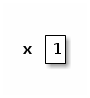
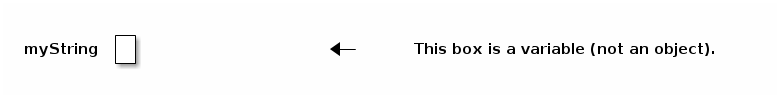
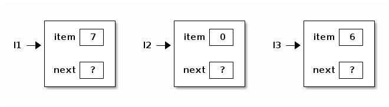
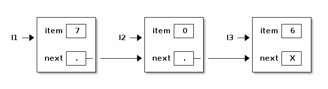
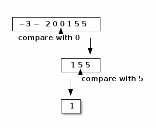
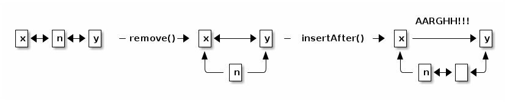

cs61b Lecture Notes
Table of Contents
Lecture 1
Prof. Jonathan Shewchuk, jrs@cory.eecs Email to prof & all TAs at once (preferred): cs61b@cory.eecs
Today's reading: Sierra & Bates, pp. 1-9, 18-19, 84. Handout: Course Overview (also available from CS 61B Web page)
Also, read the CS 61B Web page as soon as possible! >>> http://www.cs.berkeley.edu/~jrs/61b <<< YOU are responsible for keeping up with readings & assignments. Few reminders. The Piazza board is required reading: https://piazza.com/berkeley/spring2014/cs61b
Labs
Labs (in 271, 273, 275, 330 Soda) start Thursday. Discussion sections start Monday. You must attend your scheduled lab (as assigned by Telebears) to
- get an account (needed for Lab 1 and Homework 1), and
- login to turn on your ability to turn in homework (takes up to 24 hours).
You may only attend the lab in which you are officially enrolled. If you are not enrolled in a lab (on the waiting list or in concurrent enrollment), you must attend a lab that has space. (Show up and ask the TA if there's room for you.)
You will not be enrolled in the course until you are enrolled in a lab. If you're on the waiting list and the lab you want is full, you can change to one that isn't, or you can stay on the waitlist and hope somebody drops.
If you're not yet enrolled in a lab, just keep going to them until you find one that has room for you (that week). Once you get enrolled in a lab, though, please always attend the one you're enrolled in.
Prerequisites
Ideally, you have taken CS 61A or E 7, or at least you're taking one of them this semester. If not, you might get away with it, but if you have not mastered recursion, expect to have a very hard time in this class. If you've taken a data structures course before, you might be able to skip CS 61B. See the Course Overview and Brian Harvey (781 Soda) for details.
Textbooks
Kathy Sierra and Bert Bates, Head First Java, Second Edition, O'Reilly, 2005. ISBN # 0-596-00920-8. (The first edition is just as good.)
Michael T. Goodrich and Roberto Tamassia, Data Structures and Algorithms in Java, Fifth Edition, John Wiley & Sons, 2010. ISBN # 0-470-38326-7. (The first/third/fourth/sixth edition is just as good, but not the second.)
We will use Sierra/Bates for the first month. Lay your hands on a copy as soon as possible.
Buy the CS 61B class reader at Vick Copy, 1879 Euclid. The bulk of the reader is old CS 61B exams, which will not be provided online. The front of the reader is stuff you'll want to have handy when you're in lab, hacking.
Grading
| 10 pts | Labs | There are 200 points total you can earn in this course, |
| 20 pts | Homeworks | broken down at left. 185+ points is an A+, 175-184 is |
| 70 pts | Projects | an A, and so on down to D- (85-94). There is NO CURVE. |
| 25 pts | Midterm I | Late homeworks and labs will NOT be accepted, period. |
| 25 pts | Midterm II | Late projects are penalized 1% of your score for every |
| 50 pts | Final Exam | two hours by which you miss the deadline. |
| 200 pts |
There will be three projects, worth 20, 30, and 20 points respectively. You will do the first project individually, and the last two as part of a group of two or three students. You may not work alone on the last two projects. All homeworks and projects will be turned in electronically.
Cheating
…will be reported to the Office of Student Conduct.
- "No Code Rule": Never have a copy of someone else's program in your possession and never give your program to someone else.
- Discussing an assignment without sharing any code is generally okay. Helping someone to interpret a compiler error message is an example of permissible collaboration. However, if you get a significant idea from someone, acknowledge them in your assignment.
- These rules apply to homeworks and projects. No discussion whatsoever in exams, of course.
- In group projects, you share code freely within your team, but not between teams.
Goals of CS 61B
- Learning efficient data structures and algorithms that use them.
- Designing and writing large programs.
- Understanding and designing data abstraction and interfaces.
- Learning Java.
THE LANGUAGE OF OBJECT-ORIENTED PROGRAMMING
Object: An object is a repository of data. For example, if MyList is a ShoppingList object, MyList might record your shopping list.
Class: A class is a type of object. Many objects of the same class might exist; for instance, MyList and YourList may both be ShoppingList objects.
Method: A procedure or function that operates on an object or a class. A method is associated with a particular class. For instance, addItem might be a method that adds an item to any ShoppingList object. Sometimes a method is associated with a family of classes. For instance, addItem might operate on any List, of which a ShoppingList is just one type.
Inheritance: A class may inherit properties from a more general class. For example, the ShoppingList class inherits from the List class the property of storing a sequence of items.
Polymorphism: The ability to have one method call work on several different classes of objects, even if those classes need different implementations of the method call. For example, one line of code might be able to call the "addItem" method on every kind of List, even though adding an item to a ShoppingList is completely different from adding an item to a ShoppingCart.
Object-Oriented: Each object knows its own class and which methods manipulate objects in that class. Each ShoppingList and each ShoppingCart knows which implementation of addItem applies to it.
In this list, the one thing that truly distinguishes object-oriented languages from procedural languages (C, Fortran, Basic, Pascal) is polymorphism.
Java
Java allows you to store data in variables, but first you must declare them and specify their type.
Python: x = 1 Scheme: (let ((x 1)) ) Java: int x; x = 1;
This Java declaration does two things.
- It allocates a chunk of memory big enough to store an integer, which Java calls type "int".
- It names the variable (chunk of memory) "x".

Variables are used not just to store numbers, but also to reference objects. There are two ways to get classes of objects to play with:
- Use one defined by somebody else. Java has tons of pre-defined classes you can use. Many come in the "Java standard library" provided with every Java compiler.
- Define your own.
For example, Java has a built-in class called String.
String myString;
This does not create a String object. Instead, it declares a variable (chunk of memory) that can store a reference to a String object. I draw it as a box.

Initially, myString doesn't reference anything. You can make it reference a String object by writing an assignment statement. But how do we get ahold of an actual String object? You can create one.
myString = new String();
This line performs two distinct steps. First, the phrase "new String()" is called a constructor. It constructs a brand new String object. Second, the assignment "=" causes myString to reference the object. You can think of this as myString pointing to the object.

Unlike Scheme and Python, Java programs must be compiled before you can run them. Compilation converts your written code to a machine-readable bytecode. The advantage is a faster program than one written in Scheme. The disadvantage is that you have to wait for it to compile.

Postscript: Anatomy of a Small Java Program (for discussion section)
Assume the following code is in a file called HelloWorld.java:
class HelloWorld { public static void main (String[] args) { System.out.println("Hello, world"); } }
The classes are "HelloWorld", "String", and "System". The objects are "args", "System.out", and the string "Hello, world". (Actually, the first two of these are references to objects.) The methods are "main" and "println". The println method prints its parameter, and the main method prints the string "Hello, world".
You don't have the knowledge to completely understand this code yet, but don't worry about it. We'll take the first two lines on faith as the standard way to start a Java program. They'll become clear in the coming weeks.
Let's look at the innermost line first; it does all the action. "out" references an object whose class is PrintStream. A PrintStream is a path by which characters can be output by a program. The characters that are sent through "out" find their way to your computer screen.
System is a class which happens to contain the variable out (among many other variables). We have to write "System.out" to address the output stream, because other classes might have variables called "out" too, with their own meanings.
"println" is a method (procedure) of the class PrintStream. Hence, we can invoke "println" from any PrintStream object, including System.out. "println" takes one parameter, which can be a string.
"main" is a method in the "HelloWorld" class. The HelloWorld class knows how to do the "main" operation, just like the PrintStream class knows how to do the "println" operation.

The classes System and PrintStream are all automatically provided for you by any Java compiler. Somebody has programmed them for you, so that you don't have to figure out for yourself how to send characters to the terminal.
Lecture 2
Today's reading: Sierra & Bates, Chapter 2; pp. 54-58, 154-160, 661, 669.
OBJECTS AND CONSTRUCTORS
String s; // Step 1: declare a String variable. s = new String(); // Steps 2, 3: construct new empty String; assign it to s.
At this point, s is a variable that references an "empty" String, i.e. a String containing zero characters.

String s = new String(); // Steps 1, 2, 3 combined. s = "Yow!"; // Construct a new String; make s a reference to it.

String s2 = s; // Copy the reference stored in s into s2.

Now s and s2 reference the same object.
s2 = new String(s); // Construct a copy of object; store reference in s2.

Now they refer to two different, but identical, objects.
Think about that. When Java executes that line, it does the following things, in the following order.
- Java looks inside the variables to see where it's pointing.
- Java follows the pointer to the String object.
- Java reads the characters stored in that String object.
- Java creates a new String object that stores a copy of those characters.
- Java stores a reference to the new String object in s2.
We've seen three String constructors:
- new String() constructs an empty string–it's a string, but it contains zero characters.
- "Yow!" constructs a string containing the characters Yow!.
- new String(s) takes a parameter s. Then it makes a copy of the object that s references.
Constructors always have the same name as their class, except the special constructor "stuffinquotes". That's the only exception.
Observe that "new String()" can take no parameters, or one parameter. These are two different constructors–one that is called by "new String()", and one that is called by "new String(s)". (Actually, there are many more than two–check out the online Java API to see all the possibilities.)
METHODS
Let's look at some methods that aren't constructors.
s2 = s.toUppercase(); // Create a string like s, but in all upper case.

String s3 = s2.concat("!!"); // Also written: s3 = s2 + "!!";

String s4 = "*".concat(s2).concat("*"); // Also written: s4 = "*" + s + "*";

Now, here's an important fact: when Java executed the line
s2 = s.toUppercase();
the String object "Yow!" did not change. Instead, s2 itself changed to reference a new object. Java wrote a new "pointer" into the variable s2, so now s2 points to a different object than it did before.
Unlike in C, in Java Strings are immutable–once they've been constructed, their contents never change. If you want to change a String object, you've got to create a brand new String object that reflects the changes you want. This is not true of all objects; most Java objects let you change their contents.
You might find it confusing that methods like "toUppercase" and "concat" return newly created String objects, though they are not constructors. The trick is that those methods calls constructors internally, and return the newly constructed Strings.
I/O Classes and Objects in Java
Here are some objects in the System class for interacting with a user:
System.out is a PrintStream object that outputs to the screen. System.in is an InputStream object that reads from the keyboard. [Reminder: this is shorthand for "System.in is a variable that references an InputStream object."]
But System.in doesn't have methods to read a line directly. There is a method called readLine that does, but it is defined on BufferedReader objects.
- How do we construct a BufferedReader? One way is with an InputStreamReader.
- How do we construct an InputStreamReader? We need an InputStream.
- How do we construct an InputStream? System.in is one.
(You can figure all of this out by looking at the constructors in the online Java libraries API–specifically, in the java.io library.)
Why all this fuss?
InputStream objects (like System.in) read raw data from some source (like the keyboard), but don't format the data.
InputStreamReader objects compose the raw data into characters (which are typically two bytes long in Java).
BufferedReader objects compose the characters into entire lines of text.
Why are these tasks divided among three different classes? So that any one task can be reimplemented (say, for improved speed) without changing the other two.
Here's a complete Java program that reads a line from the keyboard and prints it on the screen.
import java.io.*; class SimpleIO { public static void main(String[] arg) throws Exception { BufferedReader keybd = new BufferedReader(new InputStreamReader(System.in)); System.out.println(keybd.readLine()); } }
Don't worry if you don't understand the first three lines; we'll learn the underlying ideas eventually. The first line is present because to use the Java libraries, other than java.lang, you need to "import" them. java.io includes the InputStreamReader and BufferedReader classes.
The second line just gives the program a name, "SimpleIO".
The third line is present because any Java program always begins execution at a method named "main", which is usually defined more or less as above. When you write a Java program, just copy the line of code, and plan to understand it a few weeks from now.
Classes for Web Access
Let's say we want to read a line of text from the White House Web page. (The line will be HTML, which looks ugly. You don't need to understand HTML.)
How to read a line of text? With readLine on BufferedReader. How to create a BufferedReader? With an InputStreamReader. How to create a InputStreamReader? With an InputStream. How to create an InputStream? With a URL.
import java.net.*; import java.io.*; class WHWWW { public static void main(String[] arg) throws Exception { URL u = new URL("http://www.whitehouse.gov/"); InputStream ins = u.openStream(); InputStreamReader isr = new InputStreamReader(ins); BufferedReader whiteHouse = new BufferedReader(isr); System.out.println(whiteHouse.readLine()); } }
Postscript: Object-Oriented Terminology (not examinable)
In the words of Turing Award winner Nicklaus Wirth, "Object-oriented programming (OOP) solidly rests on the principles and concepts of traditional procedural programming. OOP has not added a single novel concept … along with the OOP paradigm came an entirely new terminology with the purpose of mystifying the roots of OOP." Here's a translation guide.
| Procedural Programming | Object-Oriented Programming |
|---|---|
| record / structure | object |
| record type | class |
| extending a type | declaring a subclass |
| procedure | method |
| procedure call | sending a message to the method [ack! phthhht!] |
I won't ever talk about "sending a message" in this class. I think it's a completely misleading metaphor. In computer science, message-passing normally implies asynchrony: that is, the process that sends a message can continue executing while the receiving process receives the message and acts on it. But that's NOT what it means in object-oriented programming: when a Java method "sends a message" to another method, the former method is frozen until the latter methods completes execution, just like with procedure calls in most languages. But you should probably know that this termology exists, much as it sucks, because you'll probably run into it sooner or later.
Lecture 3
Today's reading: Sierra & Bates, pp. 71-74, 76, 85, 240-249, 273-281, 308-309.
DEFINING CLASSES
An object is a repository of data. Fields are variables that hold the data stored in objects. Fields in objects are also known as instance variables. In Java, fields are addressed much like methods are, but fields never have parameters, and no parentheses appear after them. For example, suppose that amanda is a Human object. Then amanda.introduce() is a method call, and amanda.age is a field. Let's write a class definition for the Human class.
class Human { public int age; // The Human's age (an integer). public String name; // The Human's name. public void introduce() { // This is a _method definition_. System.out.println("I'm " + name + " and I'm " + age + " years old."); } }
"age" and "name" are both fields of a Human object. Now that we've defined the Human class, we can construct as many Human objects as we want. Each Human object we create can have different values of age and name. We might create amanda by executing the following code.
Human amanda = new Human(); // Create amanda. amanda.age = 6; // Set amanda's fields. amanda.name = "Amanda"; amanda.introduce(); // _Method call_ has amanda introduce herself.

The output is: I'm Amanda and I'm 6 years old.
Why is it that, inside the definition of introduce(), we don't have to write "amanda.name" and "amanda.age"? When we invoke "amanda.introduce()", Java remembers that we are calling introduce() on the object that "amanda" references. The methods defined inside the Human class remember that we're referring to amanda's name and age. If we had written "rishi.introduce()", the introduce method would print rishi's name and age instead. If we want to mix two or more objects, we can.
class Human { // Include all the stuff from the previous definition of Human here. public void copy(Human original) { age = original.age; name = original.name; } }
Now, "amanda.copy(rishi)" copies rishi's fields to amanda.
Constructors
Let's write a constructor, a method that constructs a Human. The constructor won't actually contain code that does the creating; rather, Java provides a brand new object for us right at the beginning of the constructor, and all you have to write (if you want) in the constructor is code to initialize the new object.
class Human { // Include all the stuff from the previous definitions here. public Human(String givenName) { age = 6; name = givenName; } }
Notice that the constructor is named "Human", and it returns an object of type "Human". This constructor is called whenever we write "new Human(s)", where s is a String reference. Now, we can shorten amanda's coming-out party to
Human amanda = new Human("Amanda"); amanda.introduce();
These lines accomplish precisely the same result as amanda's previous four lines.
You might ask…why were we able to create a Human object before we wrote a constructor? Java provides every class with a default constructor, which takes no parameters and does no initializing. Hence, when we wrote
Human amanda = new Human();
we created a new, blank Human. If the default constructor were explicitly written, it would look like this:
public Human() {
}
Warning: if you write your own Human constructor, even if it takes parameters, the default constructor goes away. If you want to have the default constructor and another constructor, you must define both explicitly.
You can override the default constructor by explicitly writing your own constructor with no parameters.
class Human { // Include all the stuff from the previous definitions here. public Human() { age = 0; name = "Untitled"; } }
The "this" Keyword
A method invocation, like "amanda.introduce()", implicitly passes an object (in this example, amanda) as a parameter called "this". So we can rewrite our last constructor as follows without changing its meaning.
public Human() { this.age = 0; this.name = "Untitled"; }
In this case, "this" is optional. However, if the parameters or local variables of a method have the same name as the fields of an object, then the former have priority, and the "this" keyword is needed to refer to the object's fields.
public void change(int age) { String name = "Tom"; this.age = age; this.name = name; }
When we call "amanda.change(11)", "this" is assigned the same value as "amanda" before the change() method begins execution.

Now, when Java executes "this.age = age", it overwrites the 6 with an 11. When Java executes "this.name = name", it overwrites amanda's name as below.

A statement like "this = amanda;" will trigger a compile-time error.
The "static" Keyword
A static field is a single variable shared by a whole class of objects; its value does not vary from object to object. For example, if "numberOfHumans" is the number of Human objects that have been constructed, it is not appropriate for each object to have its own copy of this number; every time a new Human is created, we would have to update every Human.
If we declare a field "static", there is just one field for the whole class. Static fields are also called class variables.
class Human { public static int numberOfHumans; public int age; public String name; public Human() { numberOfHumans++; // The constructor increments the number by one. } }
If we want to look at the variable numberOfHumans from another class, we write it in the usual notation, but we prefix it with the class name rather than the name of a specific object.
int kids = Human.numberOfHumans / 4; // Good. int kids = amanda.numberOfHumans / 4; // This works too, but has nothing to // do with amanda specifically. Don't // do this; it's bad (confusing) style.
System.in and System.out are other examples of static fields.
Methods can be static too. A static method doesn't implicitly pass an object as a parameter.
class Human { ... public static void printHumans() { System.out.println(numberOfHumans); } }
Now, we can call "Human.printHumans()" from another class. We can also call "amanda.printHumans()", and it works, but it's bad style, and amanda will NOT be passed along as "this".
The main() method is always static, because when we run a program, we are not passing an object in.

Any attempt to reference "this" will cause a compile-time error.
Lifetimes of Variables
- A local variable (declared in a method) is gone forever as soon as the method in which it's declared finishes executing. (If it references an object, the object might continue to exist, though.)
- An instance variable (non-static field) lasts as long as the object exists. An object lasts as long as there's a reference to it.
- A class variable (static field) lasts as long as the program runs.
Lecture 4
Today's reading: S&B pp. 10-14, 49-53, 75, 78-79, 86, 117, 286-287, 292, 660.
PRIMITIVE TYPES
Not all variables are references to objects. Some variables are primitive types, which store values like "3", "7.2", "h", and "false". They are:
| byte: | A 8-bit integer in the range -128…127. (One bit is the sign.) |
| short: | A 16-bit integer in the range -32768…32767. |
| int: | A 32-bit integer in the range -2147483648…2147483647. |
| long: | A 64-bit integer, range -9223372036854775808…9223372036854775807. |
| double: | A 64-bit floating-point number like 18.355625430920409. |
| float: | A 32-bit floating-point number; has fewer digits of precision. |
| boolean: | "true" or "false". |
| char: | A single character. |
long values are written with an L on the end: long x = 43L; This tells the compiler to internally write out "43" in a 64-bit format. double and float values must have a decimal point: double y = 18.0; float values are written with an f at the end: float f = 43.9f;
| Object types | Primitive types | |
|---|---|---|
| Variable contains a | reference | value |
| How defined? | class definition | built into Java |
| How created? | "new" | "6", "3.4", "true" |
| How initialized? | constructor | default (usually zero) |
| How used? | methods | operators ("+", "*", etc.) |
Operations on int, long, short, and byte types.
-x x * y x + y x / y <-- rounds toward zero (drops the remainder). x - y x % y <-- calculates the remainder of x / y.
Except for "%", these operations are also available for doubles and floats. Floating-point division ("/") doesn't round to an integer, but it does round off after a certain number of bits determined by the storage space.
The java.lang library has more operations in…
- the Math class.
x = Math.abs(y); // Absolute value. Also see Math.sqrt, Math.sin, etc.
- the Integer class.
int x = Integer.parseInt("1984"); // Convert a string to a number.
- the Double class.
double d = Double.parseDouble("3.14");
Converting types: integers can be assigned to variables of longer types.
int i = 43; long l = 43; // Okay, because longs are a superset of ints. l = i; // Okay, because longs are a superset of ints. i = l; // Compiler ERROR. i = (int) l; // Okay.
The string "(int)" is called a cast, and it casts the long into an int. In the process, high bits will be lost if l does not fit in the range -2147483648… 2147483647 Java won't let you compile "i = l" because it's trying to protect you from accidentally creating a nonsense value and a hard-to-find bug. Java requires you to explicitly cast longs to ints to show your acknowledgment that you may be destroying information.
Similarly, "float f = 5.5f; double d = f;" is fine, but you need an explicit cast for "double d = 5.5; float f = (float) d;". Integers (even longs) can be directly assigned to floating-point variables (even floats) without a cast, but the reverse requires a cast because the number is truncated to an integer.
Boolean Values
A boolean value is either "true" or "false". Booleans have operations of their own, signified "&&" (and), "||" (or), and "!" (not).
| a | b | a && b | a | | b | !a |
|---|---|---|---|---|
| false | false | false | false | true |
| false | true | false | true | |
| true | false | false | true | false |
| true | true | true | true |
Boolean values can be specified directly ("true", "false") or be created by the comparison operators "==", "<", ">", "<=", ">=", "!=" (not equal to).
boolean x = 3 == 5; // x is now false. x = 4.5 >= 4.5; // x is now true. x = 4 != 5 - 1; // x is now false. x = false == (3 == 0); // x is now true.
CONDITIONALS
An "if" statement uses a boolean expression to decide whether to execute a set of statements. The form is
if (boolValue) {
statements;
}
The statements are executed if and only if "boolValue" is "true". The parentheses around the boolean expression are required (for no good reason).
boolean pass = score >= 75; if (pass) { output("You pass CS 61B"); } else { // The following line executes if and only if score < 75. output("You are such an unbelievable loser"); }
if-then-else clauses can be (1) nested and (2) daisy-chained. Nesting allows you to build decision trees. Daisy-chaining allows you to present more than two alternatives. For instance, suppose you want to find the maximum of three numbers.
if (x > y) { if (x > z) { maximum = x; } else { maximum = z; } } else if (y > z) { maximum = y; } else { maximum = z; }
Some long chains of if-then-else clauses can be simplified by using a "switch" statement. "switch" is appropriate only if every condition tests whether a variable x is equal to some constant.
switch (month) { | if (month == 2) { case 2: | days = 28; days = 28; | } else if ((month == 4) || (month == 6) || break; | (month == 9) || (month == 11)) { case 4: | days = 30; case 6: | } else { case 9: | days = 31; case 11: | } days = 30; | break; default: days = 31; break; } // These two code fragments do exactly the same thing.
IMPORTANT: "break" jumps to the end of the "switch" statement. If you forget a break statement, the flow of execution will continue right through past the next "case" clause, which is why cases 4, 6, and 9 work right. If month == 12 in the following example, both Strings are printed.
switch (month) { case 12: output("It's December."); // Just keep moving right on through. case 1: case 2: case 11: output("It's cold."); }
However, this is considered bad style, because it's hard to read and understand. If there's any chance that other people will need to read or modify your code (which is the norm when you program for a business), don't code it like this. Use break statements in the switch, and use subroutines to reuse code and clarify the control flow.
Observe that the last example doesn't have a "default:" case. If "month" is not 1 nor 2 nor 11 nor 12, Java jumps right to the end of the "switch" statement (just past the closing brace) and continues execution from there.
THE "return" KEYWORD
Like conditionals, "return" affects the flow of control of a program. It causes a method to end immediately, so that control returns to the calling method.
Here's a recursive method that prints the numbers from 1 to x.
public static void oneToX(int x) { if (x < 1) { return; } oneToX(x - 1); System.out.println(x); }
The return keyword serves a dual purpose: it is also the means by which a function returns a value. A function is a method that is declared to return a non-void type. For instance, here's a function that returns an int.
public int daysInMonth(int month) { switch (month) { case 2: return 28; case 4: case 6: case 9: case 11: return 30; default: return 31; } }
The "return" value can be an expression. Some examples:
return x + y - z; return car.velocity(time);
Lecture 5
Today's reading: Sierra & Bates pp. 59-62, 83, 114-116, 293-300, 670.
LOOPS
"while" Loops
A "while" statement is like an "if" statement, but the body of the statement is executed repeatedly, as long as the condition remains true. The following example tests whether n is a prime number by attempting to divide it by every integer in the range 2…n - 1.
public static boolean isPrime(int n) { int divisor = 2; while (divisor < n) { _ <- "divisor < n" is the _loop_condition_. if (n % divisor == 0) { | return false; | These lines inside the braces } | are called the _loop_body_. divisor++; _| } return true; }
Here's how the loop executes.
- When Java reaches this "while" loop, it tests whether the loop condition "divisor < n" is true.
- If divisor < n, Java executes the loop body {in braces}.
- When Java finishes the loop body (i.e. after executing "divisor++"), it tests again whether "divisor < n" is true.
- If it's still true, Java jumps back up to the beginning of the loop body and executes it again.
- If Java tests the loop condition and finds that "divisor < n" is false, Java continues execution from the next line of code after the loop body.
An iteration is a pass through the loop body. In this example, if n is 2 or less, the loop body won't iterate even once.
"for" Loops
"for" loops are a convenient shorthand that can be used to write some "while" loops in a more compact way. The following "for" loop is equivalent to the following "while" loop.
for (initialize; condition; next) { | initialize; statements; | while (condition) { } | statements; | next; | }
By convention, the "initialize" and "next" are both expressions that affect a variable that changes every loop iteration and is central to the test. Most commonly, "for" statements are used to iterate while advancing an index variable over a fixed range of values. isPrime can be rewritten thus:
public static boolean isPrime(int n) { for (int divisor = 2; divisor < n; divisor++) { _ if (n % divisor == 0) { | return false; | Loop body. } _| } return true; }
A common mistake among beginning Java and C programmers is to get the condition wrong and do one loop iteration too few. For example, suppose you want to print all the prime numbers in the range 2…n.
public static void printPrimes(int n) { int i; for (i = 2; i < n; i++) { // ERROR!!! Condition should be i <= n. if (isPrime(i)) { System.out.print(" " + i); } } }
Suppose we correct this method so the loop condition is "i <= n". Think carefully: what is the value of i when the printPrimes method ends?
We'll come back to iteration, but first let's investigate something more interesting to iterate on.
ARRAYS
An array is an object consisting of a numbered list of variables, each of which is a primitive type or a reference to another object. The variables in an array are always indexed from zero in increments of one. For example, here is an array of characters.

Like any object, an array is only useful if we can reference it, usually through some reference variable like "c" above. We declare c thusly:
char[] c; // Reference to an array (of any length) of characters.
We can construct an array of four characters as follows.
c = new char[4];
Now that we have an array object, we may fill in its values by indexing c.
c[0] = 'b'; // Store the character 'b' at index 0. c[1] = 'l'; c[2] = 'u'; c[3] = 'e';
The characters in a four-element array are indexed from 0 to 3. If we try to address any index outside this range, we will trigger a run-time error.
c[4] = 's'; // Program stops with ArrayIndexOutOfBoundsException
A run-time error is an error that doesn't show up when you compile the code, but does show up later when you run the program and the Java Virtual Machine tries to access the out-of-range index.
When c references an array, you can find out its length by looking at the field "c.length". You can never assign a value to the "length" field, though. Java will give you a compile-time error if you try.
Primes Revisited
The printPrimes method is embarrassingly slow when n is large. Arrays can help us write a faster method to identify the primes from 2 to n.
The method uses an ancient algorithm called the Sieve of Eratosthenes. All integers are assumed prime until proven composite. The algorithm iterates through all possible divisors, and marks as non-prime every integer divisible by a given divisor. Here's the beginning of the method.
public static void printPrimes(int n) { boolean[] prime = new boolean[n + 1]; // Numbered 0...n. int i; for (i = 2; i <= n; i++) { prime[i] = true; // Prime until proven composite. }
Why did we construct an array of length n + 1? Because if we'd constructed an array of length n, its elements would be numbered from 0 to n - 1. But we'd like to have an element numbered n.
To continue the method, we iterate over all possible divisors from 2 to the square root of n. For each prime value of divisor, we mark as non-prime all integers divisible by divisor, except divisor itself.
for (int divisor = 2; divisor * divisor <= n; divisor++) { if (prime[divisor]) { for (i = 2 * divisor; i <= n; i = i + divisor) { prime[i] = false; // i is divisible by divisor. } } }
Math question: why do we only need to consider divisors up to the square root of n?
Finally, we print every integer from 2 to n that hasn't been marked non-prime.
for (i = 2; i <= n; i++) { if (prime[i]) { System.out.print(" " + i); } }
Observe that elements 0 and 1 of the array are never used. A tiny bit of memory is wasted, but the readability of the code is better for it.
Multi-Dimensional Arrays
A two-dimensional array is an array of references to arrays. A three- dimensional array is an array of arrays of arrays. As an example, consider Pascal's Triangle.
1 <-- row 0
1 1
1 2 1
1 3 3 1
1 4 6 4 1
1 5 10 10 5 1 <-- row 5
Each entry is the sum of the two nearest entries in the row immediately above. If the rows are numbered from zero, row i represents the coefficients of the polynomial (x + 1)i. For example, (x + 1)4 = x4 + 4x3 + 6x2 + 4x + 1.
The following method returns an array of arrays of ints that stores the first n rows of Pascal's Triangle.
public static int[][] pascalTriangle(int n) { int[][] pt = new int[n][];
Here, we've just declared pt to reference an array of arrays, and constructed an array for it to reference. However, the arrays that this array will reference do not yet exist. They are constructed and filled in by the following loop.
for (int i = 0; i < n; i++) { pt[i] = new int[i + 1]; // Construct row i. pt[i][0] = 1; // Leftmost value of row i. for (int j = 1; j < i; j++) { pt[i][j] = pt[i - 1][j - 1] + pt[i - 1][j]; // Sum 2 entries above. } pt[i][i] = 1; // Rightmost value of row i. } return pt;
Our array objects look like this:

Lecture 6
Today's reading: Sierra & Bates pp. 282-285.
MORE ARRAYS
Automatic Array Construction
Last lecture, we used a loop to construct all the arrays that the top-level array references. This was necessary to construct a triangular array. But if you want a rectangular multi-dimensional array, rather than a triangular one, Java can construct all of the arrays for you at once.
int[][] table = new int[x][y];
This declaration constructs an array of x references to arrays. It also constructs x arrays of y ints. The variable "table" references the array of arrays; and each entry in the array of arrays references one of the arrays of ints. All the arrays are constructed for you at once. Similarly, Java can construct three- or ten-dimensional arrays for you, memory permitting.
We could have used a square array to store Pascal's Triangle, but that would have unnecessarily wasted memory. If you have enough memory, you might not care.
When you declare a variable, you can also construct array entries by using initializers.
Human[] b = {amanda, rishi, new Human("Paolo")}; int[][] c = {{7, 3, 2}, {x}, {8, 5, 0, 0}, {y + z, 3}};
In the second example, Java constructs a non-rectangular two-dimensional array, composed of one array of arrays and four arrays of ints.
Sadly, you can only use this notation in a declaration. You can't write
d = {3, 7}; // Compile-time ERROR.
f({1, 2, 3}); // Compile-time ERROR.
Another subtlety of array declarations is the following.
int[] a, b, c; // a, b, and c all reference arrays. int a[], b, c[][]; // a is 1D; c is 2D; b is not a reference/array. int[] a, b[]; // a references a 1D array; b references a 2D array.
Arrays of Objects
When you construct a multi-dimensional array, Java can construct all the arrays for you. But when you construct an array of objects, Java does not construct the objects automatically. The array contains space for references to the objects. You must construct the objects yourself.
String[] sentence = new String[3]; sentence[0] = "Word"; sentence[2] = new String();

main()'s Parameter
What is the array of Strings that the main() method takes as a parameter? It's a list of command-line arguments sent to your Java program, prepared for you by Java. Consider the following program.
class Echo { public static void main(String[] args) { for (int i = 0; i < args.length; i++) { System.out.println(args[i]); } } }
If we compile this and type "java Echo kneel and worship Java", java prints

MORE LOOPS
"do" Loops
A "do" loop has just one difference from a "while" loop. If Java reaches a "do" loop, it always executes the loop body at least once. Java doesn't check the loop condition until the end of the first iteration. "do" loops are appropriate for any loop you always want executed at least once, especially if the variables in the condition won't have meaningful assignments until the loop body has been executed.
do { s = keybd.readLine(); process(s); } while (s.length() > 0); // Exit loop if s is an empty String.
The "break" and "continue" Statements
A "break" statement immediately exits the innermost loop or "switch" statement enclosing the "break", and continues execution at the code following the loop or "switch".
In the loop example above, we might want to skip "process(s)" when s is a signal to exit (in this case, an empty String). We want a "time-and-a-half" loop–we want to enter the loop at a different point in the read-process cycle than we want to exit the loop at. Here are two alternative loops that do the right thing. They behave identically. Each has a different disadvantage.
s = keybd.readLine(); | while (true) { // Loop forever. while (s.length() > 0) { | s = keybd.readLine(); process(s); | if (s.length() == 0) { s = keybd.readLine(); | break; } | } | process(s); |} /*Disadvantage: The line "s = keybd..." | is repeated twice. It's not really | a disadvantage here, but if input | Disadvantage: Somewhat obfuscated for took 100 lines of code, the | the reader, because the loop isn't duplication would make the code harder | aligned with its natural endpoint. to maintain. Why? Because a programmer improving the code might change one copy of the duplicated code without noticing the need to change the other to match.*/
Some loops have more than one natural endpoint. Suppose we want to iterate the read-process loop at most ten times. In the example at left below, the "break" statement cannot be criticized, because the loop has two natural endpoints. We could get rid of the "break" by writing the loop as at right below, but the result is longer and harder to read.
for (int i = 0; i < 10; i++) { | int i = 0; s = keybd.readLine(); | do { if (s.length() == 0) { | s = keybd.readLine(); break; | if (s.length() > 0) { } | process(s); process(s); | } } | i++; | } while ((i < 10) && | (s.length() > 0));
There are anti-break zealots who claim that the loop on the right is the "correct" way to do things. I disagree, because the left loop is clearly more readable.
Some of the zealots feel this way because "break" statements are a little bit like the "go to" statements found in some languages like Basic and Fortran (and the machine language that microprocessors really execute). "go to" statements allow you to jump to any line of code in the program. It sounds like a good idea at first, but it invariably leads to insanely unmaintainable code. For example, what happens if you jump to the middle of a loop? Turing Award winner Edsger Dijkstra wrote a famous article in 1968 entitled "Go To Statement Considered Harmful", which is part of the reason why many modern languages like Java don't have "go to" statements.
Both "break" and "return" are limited forms of "go to" statements. Their limitations prohibit the worst abuses of "go to". They allow control flow to jump in your program in ways that are straightforward to understand.
WARNING: It's easy to forget exactly where a "break" statement will jump to. For example, "break" does not jump to the end of the innermost enclosing "if" statement. An AT&T programmer introduced a bug into telephone switching software in a procedure that contained a "switch" statement, which contained an "if" clause, which contained a "break", which was intended for the "if" clause, but instead jumped to the end of the "switch" statement. As a result, on January 15, 1990, AT&T's entire U.S. long distance service collapsed for eleven hours. (That code was actually written in C, but Java and C use identical syntax and semantics for loops, "switch", and "break".)
The "continue" statement is akin to the "break" statement, except (1) it only applies to loops, and (2) it jumps to the end of the loop body but it doesn't necessarily exit the loop; another iteration will commence if the loop condition is satisfied.
Finally, I told you that "for" loops are identical to certain "while" loops, but there's actually a subtle difference when you use "continue". What's the difference between the following two loops?
int i = 0; | for (int i = 0; i < 10; i++) { while (i < 10) { | if (condition(i)) { if (condition(i)) { | continue; continue; | } } | call(i); call(i); | } i++; | } |
Answer: when "continue" is called in the "while" loop, "i++" is not executed. In the "for" loop, however, i is incremented at the end of every iteration, even iterations where "continue" is called.
CONSTANTS
Java's "final" keyword is used to declare a value that can never be changed. If you find yourself repeatedly using a numerical value with some "meaning" in your code, you should probably turn it into a "final" constant.
BAD: if (month == 2) { GOOD: public final static int FEBRUARY = 2; // Usually near top of class. ... if (month == FEBRUARY) {
Why? Because if you ever need to change the numerical value assigned to February, you'll only have to change one line of code, rather than hundreds.
You can't change the value of FEBRUARY after it is declared and initialized. If you try to assign another value to FEBRUARY, you'll have a compiler error.
The custom of rendering constants in all-caps is long-established and was inherited from C. (The compiler does not require it, though.)
For any array x, "x.length" is a "final" field.
You can declare local parameters "final" to prevent them from being changed.
void myMethod(final int x) { x = 3; // Compiler ERROR. Don't mess with X's! }
"final" is usually used for class variables (static fields) and parameters, but it can be used for instance variables (non-static fields) and local variables too. It only makes sense for these to be "final" if the variable is declared with an initializer that calls a method or constructor that doesn't always return the same value.
class Bob { public final long creationTime = System.currentTimeMillis(); }
When objects of the Bob class are constructed, they record the time at that moment. Afterward, the creationTime can never be changed.
SCOPE
The scope of a variable is the portion of the program that can access the variable. Here are some of Java's scoping rules.
- Local variables and parameters are in scope only inside the method that declares them. Furthermore, a local variable is in scope only from the variable declaration down to the innermost closing brace that encloses it. A local variable declared in the initialization part of a "for" loop is in scope only in the loop body.
- Class variables (static fields) are in scope everywhere in the class, except when shadowed by a local variable or parameter of the same name.
- Instance variables (non-static fields) are in scope in non-static methods of the class, except when shadowed.
Lecture 7
Today's reading: Goodrich & Tamassia, Section 3.2.
LISTS
Let's consider two different data structures for storing a list of things: an array and a linked list.
An array is a pretty obvious way to store a list, with a big advantage: it enables very fast access of each item. However, it has two disadvantages.
First, if we want to insert an item at the beginning or middle of an array, we have to slide a lot of items over one place to make room. This takes time proportional to the length of the array.
Second, an array has a fixed length that can't be changed. If we want to add items to the list, but the array is full, we have to allocate a whole new array and move all the ints from the old array to the new one.
public class AList { int a[]; int lastItem; public AList() { a = new int[10]; // The number "10" is arbitrary. lastItem = -1; } public void insertItem(int newItem, int location) { int i; if (lastItem + 1 == a.length) { // No room left in the array? int b[] = new int[2 * a.length]; // Allocate a new array, twice as long. for (i = 0; i <= lastItem; i++) { // Copy items to the bigger array. b[i] = a[i]; } a = b; // Replace the too-small array with the new one. } for (i = lastItem; i >= location; i--) { // Shift items to the right. a[i + 1] = a[i]; } a[location] = newItem; lastItem++; } }
LINKED LISTS (a recursive data type)
We can avoid these problems by choosing a Scheme-like representation of lists. A linked list is made up of nodes. Each node has two components: an item, and a reference to the next node in the list. These components are analogous to "car" and "cdr". However, our node is an explicitly defined object.
public class ListNode { // ListNode is a recursive type public int item; public ListNode next; // Here we're using ListNode before } // we've finished declaring it.
Let's make some ListNodes.
ListNode l1 = new ListNode(), l2 = new ListNode(), l3 = new ListNode(); l1.item = 7; l2.item = 0; l3.item = 6;

Now let's link them together.
l1.next = l2; l2.next = l3;
What about the last node? We need a reference that doesn't reference anything. In Java, this is called "null".
l3.next = null;

To simplify programming, let's add some constructors to the ListNode class.
public ListNode(int i, ListNode n) { item = i; next = n; } public ListNode(int i) { this(i, null); }
These constructors allow us to emulate Scheme's "cons" operation.
ListNode l1 = new ListNode(7, new ListNode(0, new ListNode(6)));
Linked lists vs. array lists
Linked lists have several advantages over array-based lists. Inserting an item into the middle of a linked list takes just a small constant amount of time, if you already have a reference to the previous node (and don't have to walk through the whole list searching for it). The list can keep growing until memory runs out.
The following method inserts a new item into the list immediately after "this".
public void insertAfter(int item) { next = new ListNode(item, next); } l2.insertAfter(3);

However, linked lists have a big disadvantage compared to arrays. Finding the nth item of an array takes a tiny, constant amount of time. Finding the nth item of a linked list takes time proportional to n. You have to start at the head of the list and walk forward n - 1 nodes, one "next" at a time.
Many of the data structures we will study in this class will be attempts to find a compromise between arrays and linked lists. We'll learn data structures that are fast for both arbitrary lookups (like arrays) and arbitrary insertions (like linked lists).
Lists of Objects
For greater generality, let's change ListNodes so that each node contains not an int, but a reference to any Java object. In Java, we can accomplish this by declaring a reference of type Object.
public class SListNode { public Object item; public SListNode next; }
The "S" in "SListNode" stands for singly-linked. This will make sense when we contrast these lists with doubly-linked lists later. You'll see the SListNode class in next week's lab and homework.
A List Class
There are two problems with SListNodes.
(1) Suppose x and y are pointers to the same shopping list. Suppose we insert a new item at the beginning of the list thusly:
x = new SListNode("soap", x);
y doesn't point to the new item; y still points to the second item in x's list. If y goes shopping for x, he'll forget to buy soap.
(2) How do you represent an empty list? The obvious way is "x = null". However, Java won't let you call a SListNode method–or any method–on a null object. If you write "x.insertAfter(item)" when x is null, you'll get a run-time error, even though x is declared to be a SListNode. (There are good reasons for this, which you'll learn later in the course.)
The solution is a separate SList class, whose job is to maintain the head (first node) of the list. We will put many of the methods that operate on lists in the SList class, rather than the SListNode class.
public class SList { private SListNode head; // First node in list. private int size; // Number of items in list. public SList() { // Here's how to represent an empty list. head = null; size = 0; } public void insertFront(Object item) { head = new SListNode(item, head); size++; } }

Now, when you call x.insertFront("fish"), every reference to that SList can see the change.
Another advantage of the SList class is that it can keep a record of the SList's size (number of SListNodes). Hence, the size can be determined more quickly than if the SListNodes had to be counted.
Lecture 8
Today's reading: Goodrich & Tamassia, Section 3.3.
THE "public" AND "private" KEYWORDS
Thus far, we've usually declared fields and methods using the "public" keyword. However, we can also declare a field or method "private". A private method or field is invisible and inaccessible to other classes, and can be used only within the class in which the field or method is declared.
Why would we want to make a field or method private?
- To prevent data within an object from being corrupted by other classes.
- To ensure that you can improve the implementation of a class without causing other classes that depend on it to fail.
In the following example, EvilTamperer tries to get around the error checking code of the Date class by fiddling with the internals of a Date object.
public class Date { | public class EvilTamperer { private int day; | public void tamper() { private int month; | Date d = new Date(1, 1, 2006); | private void setMonth(int m) { | d.day = 100; // Foiled!! month = m; | d.setMonth(0); // Foiled again!! } | } | } public Date(int month, int day) { | [Implementation with | error-checking code here.] | } }
However, javac won't compile EvilTamperer, because the Date class has declared its vulnerable parts "private". setMonth is an internal helper method used within the Date class, whereas the Date constructor is a public part of the interface of the Date class. Error-checking code in the constructor ensures that invalid Dates are not constructed.
Here are some important definitions.
The interface of a class is a set of prototypes for public methods (and sometimes public fields), plus descriptions of the methods' behaviors.
An Abstract Data Type (ADT) is a class that has a well-defined interface, but its implementation details are firmly hidden from other classes. That way, you can change the implementation of a class without jeopardizing the programs that depend on it. The Date class is an ADT. We'll implement lots of ADTs this semester.
An invariant is a fact about a data structure that is always true (assuming the code is bug-free), no matter what methods are called by external classes. For example, the Date ADT enforces the invariant that a Date object always represents a valid date. An invariant is enforced by allowing access to certain fields only through method calls.
An ADT is often a good thing to aspire to. In most of your classes, you should declare all fields private, as well as helper functions meant only for internal use, so that you can maintain sensible invariants on your data structures.
However, not all classes are ADTs! Some classes are nothing more than data storage units, and do not need to enforce any invariants. In such classes, all fields may be declared public.
The SList ADT
Last lecture, I created an SList class to solve the problems of representing empty lists and inserting items at the beginning of a list. Today, I want to introduce another advantage of the SList class.
We want the SList ADT to enforce two invariants:
- An SList's "size" variable is always correct.
- A list is never circularly linked; there is always a tail node whose "next" reference is null.
Both these goals are accomplished by making sure that only the methods of the SList class can change the lists' internal data structures. SList ensures this by two means:
- The fields of the SList class (head and size) are declared "private".
- No method of SList returns an SListNode.
The first rule is necessary so that the evil tamperer can't change the fields and corrupt the SList or violate invariant (1). The second rule prevents the evil tamperer from changing list items, truncating a list, or creating a cycle in a list, thereby violating invariant (2).
DOUBLY-LINKED LISTS
As we saw last class, inserting an item at the front of a linked list is easy. Deleting from the front of a list is also easy. However, inserting or deleting an item at the end of a list entails a search through the entire list, which might take a long time. (Inserting at the end is easy if you have a `tail' pointer, as you will learn in Lab 3, but deleting is still hard.)
A doubly-linked list is a list in which each node has a reference to the previous node, as well as the next node.
class DListNode { | class DList { Object item; | private DListNode head; DListNode next; | private DListNode tail; DListNode prev; | } } |

DLists make it possible to insert and delete items at both ends of the list, taking constant running time per insertion and deletion. The following code removes the tail node (in constant time) if there are at least two items in the DList.
tail.prev.next = null;
tail = tail.prev;
You'll need a special case for a DList with no items. You'll also need a special case for a DList with one item, because tail.prev.next does not exist. (Instead, head needs to be changed.)
Let's look at a clever trick for reducing the number of special cases, thereby simplifying our DList code. We designate one DListNode as a sentinel, a special node that does not represent an item. Our list representation will be circularly linked, and the sentinel will represent both the head and the tail of the list. Our DList class no longer needs a tail pointer, and the head pointer points to the sentinel.
class DList { private DListNode head; private int size; }

The invariants of the DList ADT are more complicated than the SList invariants. The following invariants apply to the DList with a sentinel.
- For any DList d, d.head != null. (There's always a sentinel.)
- For any DListNode x, x.next != null.
- For any DListNode x, x.prev != null.
- For any DListNode x, if x.next == y, then y.prev == x.
- For any DListNode x, if x.prev == y, then y.next == x.
- A DList's "size" variable is the number of DListNodes, NOT COUNTING the sentinel (denoted by "head"), that can be accessed from the sentinel by a sequence of "next" references.
An empty DList is represented by having the sentinel's prev and next fields point to itself.
Here's an example of a method that removes the last item from a DList.
public void removeBack() { if (head.prev != head) { // Do nothing if the DList is empty. head.prev = head.prev.prev; // Sentinel now points to second-last item. head.prev.next = head; // Second-last item now points to sentinel. size--; } }
In Lab 4 and Homework 4, you'll implement more methods for this DList class.
Lecture 9
Today's reading: Sierra & Bates pp. 77, 235-239, 258-265, 663.
THE STACK AND THE HEAP
Java stores stuff in two separate pools of memory: the stack and the heap.
The heap stores all objects, including all arrays, and all class variables (i.e. those declared "static").
The stack stores all local variables, including all parameters.
When a method is called, the Java Virtual Machine creates a stack frame (also known as an activation record) that stores the parameters and local variables for that method. One method can call another, which can call another, and so on, so the JVM maintains an internal stack of stack frames, with "main" at the bottom, and the most recent method call on top.
Here's a snapshot of the stack while Java is executing the SList.insertEnd method. The stack frames are on the left. Everything on the right half of the page is in the heap. Read the stack from bottom to top, because that's the order in which the stack frames were created.

The method that is currently executing (at any point in time) is the one whose stack frame is on top. All the other stack frames represent methods waiting for the methods above them to return before they can continue executing.
When a method finishes executing, its stack frame is erased from the top of the stack, and its local variables are erased forever.
The java.lang library has a method "Thread.dumpStack" that prints a list of the methods on the stack (but it doesn't print their local variables). This method can be convenient for debugging–for instance, when you're trying to figure out which method called another method with illegal parameters.
Parameter Passing
As in Scheme, Java passes all parameters by value. This means that the method has copies of the actual parameters, and cannot change the originals. The copies reside in the method's stack frame for the method. The method can change these copies, but the original values that were copied are not changed.
In this example, the method doNothing sets its parameter to 2, but it has no effect on the value of the calling method's variable a:
method: | STACK (just before the method returns)
|
static void doNothing(int x) { | -----
x = 2; | x | 2 |
} | ----- stack frame for doNothing
|-----------------------------------------
method call: |
| -----
int a = 1; | a | 1 |
doNothing(a); | ----- stack frame for main
When the method call returns, a is still 1. The doNothing method, as its name suggests, failed to change the value of a or do anything relevant at all.
However, when a parameter is a reference to an object, the reference is copied, but the object is not; the original object is shared. A method can modify an object that one of its parameters points to, and the change will be visible everywhere. Here's an example that shows how a method can make a change to an object that is visible to the calling method:
method: | STACK | HEAP
| set3|
class IntBox { | ----- |
public int i; | ib | .-+----------------\
static void set3(IntBox ib) { | ----- | |
ib.i = 3; | | |
} |--------------------| v
| ----- | ------
method call: | b | .-+------------->|i |3|
| ----- main| ------
IntBox b = new IntBox();
set3(b);
For those of you who are familiar with programming languages that have "pass by reference," the example above is as close as you can get in Java. But it's not "pass by reference." Rather, it's passing a reference by value.
Here's an example of a common programming error, where a method tries and fails to make a change that is visible to the calling method. (Assume we've just executed the example above, so b is set up.)
method: | STACK | HEAP
| badSet4|
class IntBox { | ----- | ------
static void badSet4(IntBox ib) { | ib | .-+------------->|i |4|
ib = new IntBox(); | ----- | ------
ib.i = 4; | |
} |--------------------|
| ----- | ------
method call: | b | .-+------------->|i |3|
| ----- main| ------
badSet4(b);
Binary search
When a method calls itself recursively, the JVM's internal stack holds two or more stack frames connected with that method. Only the top one can be accessed.
Here's a recursive method that searches a sorted array of ints for a particular int. Let i be an array of ints sorted from least to greatest–for instance, {-3, -2, 0, 0, 1, 5, 5}. We want to search the array for the value "findMe". If we find "findMe", we return its array index; otherwise, we return FAILURE.
We could simply check every element of the array, but that would be slow. A better strategy is to check the middle array element first. If findMe is lesser, we know it can only be in the left half of the array; if findMe is greater, we know it can only be in the right half. Hence, we've eliminated half the possibilities with one comparison. We still have half the array to check, so we recursively check the middle element of that half, and so on, cutting the possibilites in half each time. Suppose we search for 1.

The recursion has two base cases.
- If findMe equals the middle element, return its index; in the example above, we return index 4.
- If we try to search a subarray of length zero, the array does not contain "findMe", and we return FAILURE.
public static final int FAILURE = -1; private static int bsearch(int[] i, int left, int right, int findMe) { if (left > right) { return FAILURE; // Base case 2: subarray of size zero. } int mid = (left + right) / 2; // Halfway between left and right. if (findMe == i[mid]) { return mid; // Base case 1: success! } else if (findMe < i[mid]) { return bsearch(i, left, mid - 1, findMe); // Search left half. } else { return bsearch(i, mid + 1, right, findMe); // Search right half. } } public static int bsearch(int[] i, int findMe) { return bsearch(i, 0, i.length - 1, findMe); }
How long does binary search take? Suppose the array has n elements. In one call to bsearch, we eliminate at least half the elements from consideration. Hence, it takes log2 n (the base 2 logarithm of n) bsearch calls to pare down the possibilities to one. Binary search takes time proportional to log2 n. If you're not comfortable with logarithms, please review Goodrich & Tamassia Sections 4.1.2 & 4.1.7.

The stack frames appear at right in the figure above. There are three different local variables named "left" on the stack, three named "right", three named "mid", four named "i", and four named "findMe". While the current invocation of bsearch() is executing, only the topmost copy of "left" is in scope, and likewise for "right" and "mid". The other copies are hidden and cannot be accessed or changed until the current invocation of bsearch() terminates.
Most operating systems give a program enough stack space for a few thousand stack frames. If you use a recursive procedure to walk through a million-node list, Java will try to create a million stack frames, and the stack will run out of space. The result is a run-time error. You should use iteration instead of recursion when the recursion will be very deep.
However, our recursive binary search method does not have this problem. Most modern microprocessors cannot address more than 264 bytes of memory. Even if an array of bytes takes this much space, we will only have to cut the array in half 64 times to run a binary search. There's room on the stack for 64 stack frames, with plenty to spare. In general, recursion to a depth of roughly log n (where n is the number of items in a data structure) is safe, whereas recursion to a depth of roughly n is not.
Unfortunately, binary search can't be used on linked lists. Think about why.
Scope and Recursion
The scope of a variable is the portion of the program that can access the variable. Here are some of Java's scoping rules.
- Local variables and parameters are in scope only inside the method that declares them, and only for the topmost stack frame. Furthermore, a local variable is in scope only from the variable declaration down to the innermost closing brace that encloses it. A local variable declared in the initialization part of a "for" loop is in scope only in the loop body.
- Class variables (static fields) are in scope everywhere in the class, except when shadowed by a local variable or parameter of the same name.
- Fully qualified class variables ("System.out", rather than "out") are in scope everywhere in the class, and cannot be shadowed. If they're public, they're in scope in all classes.
- Instance variables (non-static fields) are in scope in non-static methods of the class, except when shadowed.
- Fully qualified instance variables ("amanda.name", "this.i") are in scope everywhere in the class, and cannot be shadowed. If they're public, they're in scope in all classes.
Lecture 10
Today's reading: All of Chapter 7, plus pp. 28-33, 250-257.
INHERITANCE
In Lab 3, you modified several methods in the SList class so that a "tail" reference could keep track of the end of the list, thereby speeding up the insertEnd() method.
We could have accomplished the same result without modifying SList–by creating a new class that inherits all the properties of SList, and then changing only the methods that need to change. Let's create a new class called TailList that inherits the fields and methods of the original SList class.
public class TailList extends SList { // The "head" and "size" fields are inherited from SList. private SListNode tail;
This code declares a TailList class that behaves just like the SList class, but has an additional field "tail" not present in the SList class. TailList is said to be a subclass of SList, and SList is the superclass of TailList. A TailList has three fields: head, size, and tail.
A subclass can modify or augment a superclass in at least three ways:
- It can declare new fields.
- It can declare new methods.
- It can override old methods with new implementations.
We've already seen an example of the first. Let's try out the third. The advantage of TailList is that it can perform the insertEnd() method much more quickly than a tail-less SList can. So, let's write a new insertEnd() for TailList, which will override SList's old, slow insertEnd() method.
public void insertEnd(Object obj) { // Your solution to Lab 3 goes here. }
The isEmpty(), length(), nth(), and toString() methods of SList do not need any changes on account of the tail reference. These methods are inherited from SList, and there's no need to rewrite them.
Inheritance and Constructors
What happens when we construct a TailList? Java executes a TailList constructor, as you would expect, but first it executes the code in the SList() constructor. The TailList constructor should initialize fields unique to TailList. It can also modify the work done by SList() if appropriate.
public TailList() { // SList() constructor called automatically; sets size = 0, head = null tail = null; }
The zero-parameter SList() constructor is always called by default, regardless of the parameters passed to the TailList constructor. To change this default behavior, the TailList constructor can explicitly call any constructor for its superclass by using the "super" keyword.
public TailList(int x) { super(x); tail = null; }
The call to "super()" must be the first statement in the constructor. If a constructor has no explicit call to "super", and its (nearest) superclass has no zero-parameter constructor, a compile-time error occurs. There is no way to tell Java not to call a superclass constructor. You have only the power to choose which of the superclass constructors is called.
Invoking Overridden Methods
Sometimes you want to override a method, yet still be able to call the method implemented in the superclass. The following example shows how to do this. Below, we want to reuse the code in SList.insertFront, but we also need to adjust the tail reference.
public void insertFront(Object obj) { super.insertFront(obj); // Insert at the front of the list. if (size == 1) { // If necessary, tail = head; // adjust the tail reference. } } }
Unlike superclass constructor invocations, ordinary superclass method invocations need not be the first statement in a method.
The "protected" Keyword
I lied when I said that we don't need to modify SList. One change is necessary. The "head" and "size" fields in SList must be declared "protected", not "private".
public class SList { protected SListNode head; protected int size; [Method definitions.] }
"protected" is a level of protection somewhere between "public" and "private". A "protected" field is visible to the declaring class and all its subclasses, but not to other classes. "private" fields aren't even visible to the subclasses.
If "head" and "size" are declared private, the method TailList.insertFront can't access them and won't compile. If they're declared protected, insertFront can access them because TailList is a subclass of SList.
When you write an ADT, if you think somebody might someday want to write a subclass of it, declare its vulnerable fields "protected", unless you have a reason for not wanting subclasses to see them. Helper methods often should be declared "protected" as well.
Class Hierarchies
Subclasses can have subclasses. Subclassing is transitive: if Proletariat is a subclass of Worker, and Student is a subclass of Proletariat, then Student is a subclass of Worker. Furthermore, every class is a subclass of the Object class (including Java's built-in classes like String and BufferedReader.) Object is at the top of every class hierarchy.
Object
/ \
String Worker
/ \
Proletariat Bourgeoisie Superclasses appear above their subclasses.
/ \ |
Student TA Professor
That's why the "item" field in each listnode is of type Object: it can reference any object of any class. (It can't reference a primitive type, though.)
Dynamic Method Lookup
Here's where inheritance gets interesting. Any TailList can masquerade as an SList. An object of class TailList can be assigned to a variable of type SList–but the reverse is not true. Every TailList is an SList, but not every SList is a TailList. It merits repeating:
!!! Every TailList *IS* an SList. !!! For example:
SList s = new TailList(); // Groovy. TailList t = new SList(); // COMPILE-TIME ERROR.
Memorize the following two definitions.
- Static type: The type of a variable.
- Dynamic type: The class of the object the variable references.
In the code above, the static type of s is SList, and the dynamic type of s is TailList. Henceforth, I will often just say "type" for static type and "class" for dynamic type.
When we invoke an overridden method, Java calls the method for the object's dynamic type, regardless of the variable's static type.
SList s = new TailList(); s.insertEnd(obj); // Calls TailList.insertEnd() s = new SList(); s.insertEnd(obj); // Calls SList.insertEnd()
This is called dynamic method lookup, because Java automatically looks up the right method for a given object at run-time. Why is it interesting?
WHY DYNAMIC METHOD LOOKUP MATTERS (Worth reading and rereading)
Suppose you have a method (in any class) that sorts an SList using only SList method calls (but doesn't construct any SLists). Your method now sorts TailLists too, with no changes.
Suppose you've written a class–let's call it RunLengthEncoding–that uses SLists extensively. By changing the constructors so that they create TailLists instead of SLists, your class immediately realizes the performance improvement that TailLists provide–without changing anything else in the RunLengthEncoding class.
Subtleties of Inheritance
(1) Suppose we write a new method in the TailList class called eatTail(). We can't call eatTail on an SList. We can't even call eatTail on a variable of type SList that references a TailList.
TailList t = new TailList(); t.eatTail(); // Groovy. SList s = new TailList(); // Groovy--every TailList is an SList. s.eatTail(); // COMPILE-TIME ERROR.
Why? Because not every object of class SList has an "eatTail()" method, so Java can't use dynamic method lookup on the variable s.
But if we define eatTail() in SList instead, the statements above compile and run without errors, even if no eatTail() method is defined in class TailList. (TailList inherits eatTail() from SList.)
(2) I pointed out earlier that you can't assign an SList object to a TailList variable. The rules are more complicated when you assign one variable to another.
SList s; TailList t = new TailList(); s = t; // Groovy. t = s; // COMPILE-TIME ERROR. t = (TailList) s; // Groovy. s = new SList(); t = (TailList) s; // RUN-TIME ERROR: ClassCastException.
Why does the compiler reject "t = s", but accept "t = (TailList) s"? It refuses "t = s" because not every SList is a TailList, and it wants you to confirm that you're not making a thoughtless mistake. The cast in the latter statement is your way of reassuring the compiler that you've designed the program to make sure that the SList s will always be a TailList.
If you're wrong, Java will find out when you run the program, and will crash with a "ClassCastException" error message. The error occurs only at run-time because Java cannot tell in advance what class of object s will reference.
Recall that SLists store items of type Object. When they're recovered, they usually have to be cast back to a more specific type before they can be used. Suppose we have a list of Integers. Recall that nth() returns type Object.
int x = t.nth(1).intValue(); // COMPILE-TIME ERROR. int y = ( (Integer) t.nth(1) ).intValue(); // Groovy.
Some methods are defined on every Object, though.
String z = t.nth(1).toString(); // Groovy.
(3) Java has an "instanceof" operator that tells you whether an object is of a specific class. WARNING: The "o" in "instanceof" is not capitalized.
if (s instanceof TailList) { t = (TailList) s; }
This instanceof operation will return false if s is null or doesn't reference a TailList. It returns true if s references a TailList object–even if it's a subclass of TailList.
Lecture 11
Today's reading: Sierra & Bates, pp. 95-109, 662.
equals()
Every class has an equals() method. If you don't define one explictly, you inherit Object.equals(), for which "r1.equals(r2)" returns the same boolean value as "r1 == r2", where r1 and r2 are references. However, many classes override equals() to compare the content of two objects.
Integer (in the java.lang library) is such a class; it stores one private int. Two distinct Integer objects are equals() if they contain the same int. In the following example, "i1 == i2" is false, but "i1.equals(i2)" is true. "i2 == i3" and "i2.equals(i3)" are both true.

IMPORTANT: r1.equals(r2) throws a run-time exception if r1 is null.
There are at least four different degrees of equality.
- Reference equality, ==. (The default inherited from the Object class.)
- Shallow structural equality: two objects are "equals" if all their fields are ==. For example, two SLists whose "size" fields are equal and whose "head" fields point to the same SListNode.
- Deep structural equality: two objects are "equals" if all their fields are "equals". For example, two SLists that represent the same sequence of items (though the SListNodes may be different).
- Logical equality. Two examples: a. Two "Set" objects are "equals" if they contain the same elements, even if the underlying lists store the elements in different orders. b. The Fractions 1/3 and 2/6 are "equals", even though their numerators and denominators are all different.
The equals() method for a particular class may test any of these four levels of equality, depending on what seems appropriate. Let's write an equals() method for SLists that tests for deep structural equality. The following method returns true only if the two lists represent identical sequences of items.
public class SList { public boolean equals(Object other) { if (!(other instanceof SList)) { // Reject non-SLists. return false; } SList o = (SList) other; if (size != o.size) { return false; } SListNode n1 = head; SListNode n2 = o.head; while (n1 != null) { if (!n1.item.equals(n2.item)) { // Deep equality of the items. return false; } n1 = n1.next; n2 = n2.next; } return true; } }
Note that this implementation may fail if the SList invariants have been corrupted. (A wrong "size" field or a loop in an SList can make it fail.)
IMPORTANT: Overriding DOESN'T WORK if we change the signature of the original method, even just to change a parameter to a subclass. In the Object class, the signature is equals(Object), so in the code above, we must declare "other" to be an Object too. If we declare "other" to be an SList, the equals() method will compile but it will NOT override. That means the code
Object s = new SList(); s.equals(s);
will call Object.equals(), not SList.equals(). Dynamic method lookup won't care that s is an SList, because the equals() method above is not eligible to override Object.equals().
Therefore, if you want to override a method, make sure the signature is EXACTLY the same.
"for each" LOOPS
Java has a "for each" loop for iterating through the elements of an array.
int[] array = {7, 12, 3, 8, 4, 9}; for (int i : array) { System.out.print(i + " "); }
Note that i is not iterating from 0 to 5; it's taking on the value of each array element in turn. You can iterate over arrays of any type this way.
String concat = ""; for (String s : stringArray) { concat = concat + s; }
For some reason, the type declaration must be in the "for" statement. The compiler barfs if you try
int i; for (i : array) { ... }
TESTING
Complex software, like Project 1, is easier to debug if you write lots of test code. We'll consider three types of testing:
- Modular testing: testing each method and each class separately.
- Integration testing: testing a set of methods/classes together.
- Result verification: testing results for correctness, and testing data structures to ensure they still satisfy their invariants.
Modular Testing
When you write a program and it fails, it can be quite difficult to determine which part of the code is responsible. Even experienced programmers often guess wrong. It's wise to test every method you write individually.
There are two types of test code for modular testing: test drivers and stubs.
(a) Test drivers are methods that call the code being tested, then check the results. In Lab 3 and Homework 3, you've seen test drivers in the SList class that check that your code is doing the right thing.
Both public and private methods should be tested. Hence, a test driver usually needs to be inside the class it tests. In a class intended for use by other classes, the obvious place to put a test driver is in the main() method, as we did in Lab 3 and Homework 3. However, if a class is the entry point for the program, you can't put your test driver in main(). Instead, put it in a method with a name like testDriver(), and then write another class whose main() method calls your test driver.
(b) Stubs are small bits of code that are called by the code being tested. They are often quite short. They serve three purposes.
- If you write a method that calls other methods that haven't yet been implemented, you can write simple stubs that fake the missing methods.
- Suppose you are having difficulty determining whether a bug lies in a calling method, or a method it calls. You can temporarily replace the callee with a stub that returns controlled results to the caller, so you can see if the caller is responsible for the problem.
- Stubs allow you to create repeatable test cases that might not arise often
in practice. For instance, suppose a subroutine fetches and returns input
from an airline database, and your code calls this subroutine. You might
want to test whether your code operates correctly when ten airplanes
depart at the same time. Such an event might be rare in practice, but you
can replace the database access subroutine with a stub that feeds fake
data to your code. There are two advantages:
- Stubs can produce test data that the real code rarely or never produces.
- Stubs produce repeatable test data, so that bugs can be reproduced.
Integration Testing
Integration testing is testing all the components together (preferably after you have tested them in isolation). Sometimes bugs arise during integration because your test cases weren't thorough enough. Other times, they arise because of misunderstandings about how the components are supposed to interact with each other. Integration testing is harder than modular testing, because it's harder to determine where a bug is, or to identify your mistaken assumptions about how the components interact.
The most important task in avoiding these bugs is to define your interfaces well and unambiguously. There should be no ambiguity in the descriptions of the behavior of your methods, especially in unusual cases. We'll talk a lot more about this in later lectures.
The best advice I can give on integration testing: learn to use a debugger.
Result Verification
A result verifier is a method that checks the results of other methods. There are at least two types of result verifiers you can write.
- Data structure integrity checkers. A method can inspect a data structure (like a list) and verify that all the invariants are satisfied. For Project 1, we are asking you to write a simple checker named "check()" that verifies the integrity of your run-length encodings.
- Algorithm result checkers. A method can inspect the output of another method for correctness. For example, if a method is supposed to sort an array of numbers, a result checker can walk through the output and check that each item really is less than or equal to its successor.
An assertion is a piece of code that tests an invariant or a result. Java offers an "assert" keyword that tests whether an assertion evaluates to "true". If the assertion comes up "false", Java terminates the program with an "AssertionError" error message, a stack trace, and an optional message of your own choosing.
assert x == 3; assert list.size == list.countLength() : "wrong SList size: " + list.size;
At the end of each method that changes a data structure, add assertions (possibly a call to an integrity checker). At the end of each method that computes a result, add an assertion that calls a result checker.
Assertions are convenient because you can turn them on or off. To turn them on when you're testing your code, run your code with "java -ea" (for "enable assertions"). To turn them off for greater speed, run with "java -da" (for "disable assertions"). The default (if you specify no switch) is -da. WARNING: when assertions are turned off, the method "list.countLength()" above is never called. Good for speed, but countLength() must not perform a task that is necessary for your program's correctness.
Regression Testing
A regression test is a test suite can be re-run whenever changes are made to the code. Nearly every software company has reams of regression tests for each product. They run them again every time they fix a bug or add a feature.
Some principles of regression testing:
- All-paths testing: your test cases should try to test every path through the code. Test every method. For every "if" statement, you should try to write a test case for each of the two paths.
- "Boundary cases" should be tested, as well as non-boundary cases. For instance, if you write a binary search method, test it on arrays of lengths zero and one, as well as longer lengths. Test the cases where the item sought is the first element, the last element, in the middle, not present. For every loop in the code, try to test the cases where it iterates zero or one times, as well as the case where it iterates several times. Test the branch "if (x >= 1)" for x equal to 0, 1, and 2.
- Generally, methods can be divided into two types: extenders, which construct or change an object; and observers, which return information about an object. (Some methods do both, but you should always think hard about whether that's good design.) Ideally, your test cases should test every combination of extender and observer.
In real-world software development, the size of the test code is often larger than the size of the code being tested.
Lecture 12
Today's reading: Sierra & Bates, Chapter 8.
ABSTRACT CLASSES
An abstract class is a class whose sole purpose is to be extended.
public abstract class List { protected int size; public int length() { return size; } public abstract void insertFront(Object item); }
Abstract classes don't allow you to create objects directly. You can declare a variable of type List, but you can't create a List object.
List myList; // Right on. myList = new List(); // COMPILE-TIME ERROR.
However, abstract classes can be extended in the same way as ordinary classes, and the subclasses are usually not abstract. (They can be, but usually they're normal subclasses with complete implementations.)
The abstract List class above includes an abstract method, insertFront. An abstract method lacks an implementation. One purpose of an abstract method is to guarantee that every non-abstract subclass will implement the method. Specifically, every non-abstract subclass of List must have an implementation for the insertFront method.
public class SList extends List { // inherits the "size" field. protected SListNode head; // inherits the "length" method. public void insertFront(Object item) { head = new SListNode(item, head); size++; } }
If you leave out the implementation of insertFront in SList, the Java compiler will complain that you must provide one. A non-abstract class may never contain an abstract method, nor inherit one without providing an implementation.
Because SList is not abstract, we can create SList objects; and because SLists are Lists, we can assign an SList to a List variable.
List myList = new SList(); // Right on. myList.insertFront(obj); // Right on.
What are abstract classes good for? It's all about the interface.
---------------------------------------------------- | An abstract class lets you define an interface | | - for multiple classes to share, | | - without defining any of them yet. | ----------------------------------------------------
Let's consider the List class. Although the List class is abstract, it is an ADT–even without any implementation!– because it has an interface with public method prototypes and well-defined behaviors. We can implement an algorithm–for example, a list sorter–based on the List interface, without ever knowing how the lists will be implemented. One list sorter can sort every kind of List.
public void listSort(List l) { ... }
In another part of the universe, your project partners can build lots of subclasses of List: SList, DList, TailList, and so on. They can also build special-case List subclasses: for example, a TimedList that records the amount of time spent doing List operations, and a TransactionList that logs all changes made to the list on a disk so that all information can be recovered if a power outage occurs. A library catalogue application that uses DLists can send them to your listSort algorithm to be sorted. An airline flight database that uses TransactionLists can send them to you for sorting, too, and you don't have to change a line of sorting code. You may have written your list sorter years before TransactionLists were ever thought of.
The list sorter is built on the foundation of a list ADT, and the application is built on the foundation of the list sorter. However, it's the application, and not the list sorter, that gets to choose what kind of list is actually used, and thereby obtains special features like transaction logging. This is a big advantage of object-oriented languages like Java.

JAVA INTERFACES
Java has an "interface" keyword which refers to something quite different than the interfaces I defined in Lecture 8, even though the two interfaces are related. Henceforth, when I say "interfaces" I mean public fields, public method prototypes, and the behaviors of public methods. When I say "Java interfaces" I mean Java's "interface" keyword.
A Java interface is just like an abstract class, except for two differences.
- In Java, a class can inherit from only one class, even if the superclass is an abstract class. However, a class can "implement" (inherit from) as many Java interfaces as you like.
- A Java interface cannot implement any methods, nor can it include any fields except "final static" constants. It only contains method prototypes and constants.
public interface Nukeable { // In Nukeable.java public void nuke(); } public interface Comparable { // In java.lang public int compareTo(Object o); } public class SList extends List implements Nukeable, Comparable { [Previous stuff here.] public void nuke() { head = null; size = 0; } public int compareTo(Object o) { [Returns a number < 0 if this < o, 0 if this.equals(o), > 0 if this > o.] } }
Observe that the method prototypes in a Java interface may be declared without the "abstract" keyword, because it would be redundant; a Java interface cannot contain a method implementation.
The distinction between abstract classes and Java interfaces exists because of technical reasons that you might begin to understand if you take CS 164 (Compilers). Some languages, like C++, allow "multiple inheritance," so that a subclass can inherit from several superclasses. Java does not allow multiple inheritance in its full generality, but it offers a sort of crippled form of multiple inheritance: a class can "implement" multiple Java interfaces.
Why does Java have this limitation? Multiple inheritance introduces a lot of problems in both the definition of a language and the efficient implementation of a language. For example, what should we do if a class inherits from two different superclasses two different methods or fields with the same name? Multiple inheritance is responsible for some of the scariest tricks and traps of the C++ language, subtleties that cause much wailing and gnashing of teeth. Java interfaces don't have these problems.
Because an SList is a Nukeable and a Comparable, we can assign it to variables of these types.
Nukeable n = new SList(); Comparable c = (Comparable) n;
The cast is required because not every Nukeable is a Comparable.
"Comparable" is a standard interface in the Java library. By having a class implement Comparable, you immediately gain access to Java's sorting library. For instance, the Arrays class in java.util includes a method that sorts arrays of Comparable objects.
public static void sort(Object[] a) // In java.util
The parameter's type is Object[], but a run-time error will occur if any item stored in a is not a Comparable.
Interfaces can be extended with subinterfaces. A subinterface can have multiple superinterfaces, so we can group several interfaces into one.
public interface NukeAndCompare extends Nukeable, Comparable { }
We could also add more method prototypes and constants, but in this example I don't.
Lecture 13
Today's reading: Sierra & Bates, pp. 154-160, 587-591, 667-668.
JAVA PACKAGES
In Java, a package is a collection of classes and Java interfaces, and possibly subpackages, that trust each other. Packages have three benefits.
- Packages can contain hidden classes that are used by the package but are not visible or accessible outside the package.
- Classes in packages can have fields and methods that are visible by all classes inside the package, but not outside.
- Different packages can have classes with the same name. For example, java.awt.Frame and photo.Frame.
Here are two examples of packages.
- java.io is a package of I/O-related classes in the standard Java libraries.
- Homework 4 uses "list", a package containing the classes DList and DListNode. You will be adding two additional classes to the list package.
Package names are hierarchical. java.awt.image.Model refers to the class Model inside the package image inside the package awt inside the package java.
Using Packages
You can address any class, field, or method with a fully-qualified name. Here's an example of all three in one.
java.lang.System.out.println("My fingers are tired.");
Java's "import" command saves us from the tedium of using fully-qualified names all the time.
import java.io.File; // Can now refer to File class, not just java.io.File. import java.io.*; // Can now refer to everything in java.io.
Every Java program implicitly imports java.lang.*, so you don't have to import it explicitly to use System.out.println(). However, if you import packages that contain multiple classes with the same name, you'll need to qualify their names explicitly throughout your code.
java.awt.Frame.add(photo.Frame.canvas);
Any package you create must appear in a directory of the same name. For example, the photo.Frame class bytecode appears in photo/Frame.class, and x.y.z.Class appears in x/y/z/Class.class. Where are the photo and x directories? They can appear in any of the directories on your "classpath". You can specify a classpath on the command line, as when you type
javac -cp ".:~jrs/classes:libraries.jar" *.java
This means that Java first looks in ".", the current directory, then looks in ~jrs/classes/, then finally in the Java archive libraries.jar when it's looking for the photo and x directories. The classpath does not include the location of the Java standard library packages (those beginning with java or javax). The Java compiler knows where to find them.
Building Packages
The files that form a package are annotated with a "package" command, which specifies the name of the package, which must match the name of the directory in which the files appear.
/* list/SList.java */ | /* list/SListNode.java */ | package list; | package list; | public class SList { | class SListNode { SListNode head; | Object item; int size; | SListNode next; } | }
Here, the SListNode class and its fields are marked neither public, private, nor protected. Instead, they have "package" protection, which falls somewhere between "private" and "protected". Package protection is specified not by using the word "package", but by using no modifier at all. Variables are package by default unless declared public, private, or protected.
A class or variable with package protection is visible to any class in the same package, but not to classes outside the package (i.e., files outside the directory). The files in a package are presumed to trust each other, and are usually implemented by the same person. Files outside the package can only see the public classes, methods, and fields. (Subclasses outside the package can see the protected methods and fields as well.)
Before we knew about packages, we had to make the fields of SListNode public so that SList could manipulate them. Our list package above solves this problem by giving SListNode and its fields package protection, so that the SList class may use SListNodes freely, but outside applications cannot access them.
In Homework 4, you'll see a different approach. There, the DListNode class is public, so that DListNodes can be directly held by application programs, but the "prev" and "next" fields have package protection, so an application cannot access these fields or corrupt the DList ADT. But an application can hop quickly from node to node because it can store DListNode references and use them as parameters in DList method calls.
Each public class must be declared in a file named after the class, but a class with package protection can be declared in any .java file (usually found together with a class that uses it). So a public SList class and a package SListNode class can both be declared in the file list/SList.java, if you feel like it.
Compiling and running files in a package is a bit tricky, because it must be done from outside the package, using the following syntax:
javac -g list/SList.java
java list.SList
Here's the correspondence between declarations and their visibility.
| Visible: | in the same package | in a subclass | everywhere |
|---|---|---|---|
| Declaration | |||
| "public" | X | X | X |
| "protected" | X | X | |
| default (package) | X | ||
| "private" |
ITERATORS
In java.util there is a standard Java interface for iterating over sequences of objects.
public interface Iterator { boolean hasNext(); Object next(); void remove(); // The remove() method is optional. }
Part of Project 1 is to write a class RunIterator that implements an Iterator for your RunLengthEncoding class. Its purpose is to provide an interface by which other classes can read the runs in your run-length encoding, one by one.
An Iterator is like a bookmark. Just as you can have many bookmarks in a book, you can have many Iterators iterating over the same data structure, each one independent of the others. One Iterator can advance without disturbing other Iterators that are iterating over the same data structure.
The first time next() is called on a newly constructed Iterator, it returns the first item in the sequence. Each subsequent time next() is called, it returns the next item in the sequence. After the Iterator has returned every item in the sequence, every subsequent call to next() throws an exception and halts with an error message. (I find this annoying; I would prefer an interface in which next() returns null. The Java library designers disagree.)
To help you avoid triggering an exception, hasNext() returns true if the Iterator has more items to return, or false if it has already returned every item in the sequence. It is usually considered good practice to check hasNext() before calling next(). (In the next lecture we'll learn how to catch exceptions; that will give us an alternative way to prevent our program from crashing when next() throws an exception.)
There is usually no way to reset an Iterator back to the beginning of the sequence. Instead, you construct a new Iterator.
Most data structures that support Iterators "implement" another interface in java.util called "Iterable".
public interface Iterable { Iterator iterator(); }
It is customary for applications that want to iterate over a data structure DS to call DS.iterate(), which constructs and returns a DSIterator whose fields are initialized so it is ready to return the first item in DS.
A benefit of creating an Iterable class with its own Iterator is that Java has a simple built-in loop syntax, a second kind of "for each" loop, that iterates over the items in a data structure. Suppose we design an SList that implements Iterator. The following loop (which can appear in any class) iterates through the items in an SList l.
for (Object o : l) { System.out.println(o); } This loop is equivalent to for (Iterator i = l.iterator(); i.hasNext(); ) { Object o = i.next(); System.out.println(o); }
To make all this more concrete, here is a complete implementation of an SListIterator class and a partial implementation of SList, both in the "list" package.
/* list/SListIterator.java */ package list; import java.util.*; public class SListIterator implements Iterator { SListNode n; public SListIterator(SList l) { n = l.head; } public boolean hasNext() { return n != null; } public Object next() { if (n == null) { /* We'll learn about throwing exceptions in the next lecture. */ throw new NoSuchElementException(); // In java.util } Object i = n.item; n = n.next; return i; } public void remove() { /* Doing it the lazy way. Remove this, motherf! */ throw new UnsupportedOperationException("Nice try, bozo."); // In java.lang } } /* list/SList.java */ package list; import java.util.*; public class SList implements Iterable { SListNode head; int size; public Iterator iterator() { return new SListIterator(this); } [other methods here] }
Observe that an Iterator may mess up or even crash the program if the structure it is iterating over changes. For example, if the node "n" that an SListIterator references is removed from the list, the SListIterator will not be able to find the rest of the nodes.
An Iterator doesn't have to iterate over a data structure. For example, you can implement an Iterator subclass called Primes that returns each successive prime number as an Integer object.
Lecture 15
EXCEPTIONS
When a run-time error occurs in Java, the JVM "throws an exception," prints an error message, and quits. Oddly, an exception is a Java object (named Exception), and you can prevent the error message from printing and the program from terminating by "catching" the Exception that Java threw.
Purpose #1: Coping with Errors
Exceptions are a way of coping with unexpected errors. By catching exceptions, you can recover. For instance, if you try to open a file that doesn't exist or that you aren't allowed to read, Java will throw an exception. You can catch the exception, handle it, and continue, instead of letting the program crash.
try { f = new FileInputStream("~cs61b/pj2.solution"); i = f.read(); } catch (FileNotFoundException e1) { System.out.println(e1); // An exception handler. } catch (IOException e2) { f.close(); // Another exception handler. }
What does this code do?
- It executes the code inside the "try" braces.
- If the "try" code executes normally, we skip over the "catch" clauses.
- If the "try" code throws an exception, Java does not finish the "try"
code. It jumps directly to the first "catch" clause that matches the
exception, and executes that "catch" clause. By "matches", I mean that
the actual exception object thrown is the same class as, or a subclass of,
the static type listed in the "catch" clause.
When the "catch" clause finishes executing, Java jumps to the next line of code immediately after all the "catch" clauses.
The code within a "catch" clause is called an exception handler.
If the FileInputStream constructor fails to find the file, it will throw a FileNotFoundException. The line "i = f.read()" is not executed; execution jumps directly to the first exception handler.
FileNotFoundException is a subclass of IOException, so the exception matches both "catch" clauses. However, only one "catch" clause is executed–the first one that matches. The second "catch" clause would execute if the first were not present.
If the FileInputStream constructor runs without error, but the read() method throws an exception (for instance, because a disk track is faulty), it typically generates some sort of IOException that isn't a FileNotFoundException. This causes the second "catch" clause to execute and close the file. Exception handlers are often used to recover from errors and clean up loose ends like open files.
Note that you don't need a "catch" clause for every exception that can occur. You can catch some exceptions and let others propagate.
Purpose #2: Escaping a Sinking Ship
Believe it or not, you might want to throw your own exception. Exceptions are the easiest way to move program execution out of a method whose purpose has been defeated.
For example, suppose you're writing a parser that reads Java code and analyzes its syntactic structure. Parsers are quite complicated, and use many recursive calls and loops. Suppose that your parser is executing a method many methods deep within the program stack within many levels of loop nesting. Suddenly, your parser unexpectedly reaches the end of the file, because a student accidentally erased the last 50 lines of his program.
It's quite painful to write code that elegantly retraces its way back up through the method calls and loops when a surprise happens deep within a parser. A better solution? Throw an exception! You can even roll your own.
public class ParserException extends Exception { }
This class doesn't have any methods except the default constructor. There's no need; the only purpose of a ParserException is to be distinguishable from other types of exceptions. Now we can write some parser methods.
public ParseTree parseExpression() throws ParserException { [loops] if (somethingWrong) { throw new ParserException(); } [more code] } } return pt; }
The "throw" statement throws a ParserException, thereby immediately getting us out of the routine. How is this different from a "return" statement? First, we don't have to return anything. Second, an exception can propagate several stack frames down the stack, not just one, as we'll see shortly.
The method signature has the modifier "throws ParserException". This is necessary; Java won't let you compile the method without it. "throws" clauses help you and the compiler keep track of which exceptions can propagate where.
public ParseTree parse() throws ParserException, DumbCodeException { [loops and code] p = parseExpression(); [more code] } } } public void compile() { ParseTree p; try { p = parse(); p.toByteCode(); } catch (ParserException e1) { } catch (DumbCodeException e2) { } }
The parse() method above shows how to define a method that can throw two (or more) exceptions. Since every exception is a subclass of Exception, we could have replaced the two exceptions with "Exception", but then the caller would have to catch all types of Exceptions. We don't want (in this case) to catch NullPointerExceptions or otherwise hide our bugs from ourselves.
When parseExpression() throws an exception, it propagates right through the calling method parse() and down to compile(), where it is caught. compile() doesn't need a "throws ParserException" clause because it catches any ParserException that can occur. In this code, the "catch" clauses don't do anything except stop the exceptions.
If an exception propagates all the way out of main() without being caught, the JVM prints an error message and halts. You've seen this happen many times.
Checked and Unchecked Throwables
The top-level class of things you can "throw" and "catch" is called Throwable. Here's part of the Throwable class hierarchy.
Throwable
/ \
/ \
/ \
/ \
/ \
Exception Error
/ \ / \
IOException RunTimeException AssertionError VirtualMachineError
/ \ \
NullPointerException ClassCastException OutOfMemoryError
An Error generally represents a fatal error, like running out of memory or stack space. Failed "assert" statements also generate a subclass of Error called an AssertionError. Although you can throw or catch any kind of Throwable, catching an Error is rarely appropriate.
Most Exceptions, unlike Errors, signify problems you could conceivably recover from. The subclass RunTimeException is made up of exceptions that might be thrown by the Java Virtual Machine, such as NullPointerException, ArrayIndexOutOfBoundsException, and ClassCastException.
There are two types of Throwables. Unchecked Throwables are those a method can throw without declaring them in a "throws" clause. All Errors and RunTimeExceptions (including all their subclasses) are unchecked, because almost every method can generate them inadvertently, and it would be silly if we had to declare them.
All Exceptions except RunTimeExceptions are checked, which means that if your method might throw one without catching it, it must declare that possibility in a "throws" clause. Examples of checked exceptions include IOException and almost any Throwable subclass you would make yourself.
When a method calls another method that can throw a checked exception, it has just two choices.
- It can catch the exception, or
- it must be declared so that it "throws" the same exception itself.
The easiest way to figure out which exceptions to declare is to declare none and let the compiler's error messages tell you. (This won't work on the exams, though.)
Lecture 16
Today's reading: Sierra & Bates, pp. 189, 283.
EXCEPTIONS (continued)
The "finally" keyword
A finally clause can also be added to a "try."
FileInputStream f = new FileInputStream("filename"); try { statementX; return 1; } catch (IOException e) { e.printStackTrace(); return 2; } finally { f.close(); }
If the "try" statement begins to execute, the "finally" clause will be executed at the end, no matter what happens. "finally" clauses are used to do things that need to be done in both normal and exceptional circumstances. In this example, it is used to close a file.
If statementX causes no exception, then the "finally" clause is executed, and 1 is returned.
If statementX causes a IOException, the exception is caught, the "catch" clause is executed, and then the "finally" clause is executed. After the "finally" clause is done, 2 is returned.
If statementX causes some other class of exception, the "finally" clause is executed immediately, then the exception continues to propagate down the stack.
In the example above, we've invoked the method "printStackTrace" on the exception we caught. When an exception is constructed, it takes a snapshot of the stack, which can be printed later.
It is possible for an exception to occur in a "catch" or "finally" clause. An exception thrown in a "catch" clause will terminate the "catch" clause, but the "finally" clause will still get executed before the exception goes on. An exception thrown in a "finally" clause replaces the old exception, and terminates the "finally" clause and the method immediately.
However…you can nest a "try" clause inside a "catch" or "finally" clause, thereby catching those exceptions as well.
Exception constructors
By convention, most Throwables (including Exceptions) have two constructors. One takes no parameters, and one takes an error message in the form of a String.
class MyException extends Exception { public MyException() { super(); } public MyException(String s) { super(s); } }
The error message will be printed if it propagates out of main(), and it can be read by the Throwable.getMessage() method. The constructors usually call the superclass constructors, which are defined in Throwable.
GENERICS
Suppose you're using a list of Objects to store Strings. When you fetch a String from the list, you have to cast it back to type "String" before you can call the methods exclusive to Strings. If somehow an object that's not a String got into your list, the cast will throw an exception. It would be nice to have the compiler enforce the restriction that nothing but Strings can ever get into your list in the first place, so you can sleep at night knowing that your family is safe from a ClassCastException.
So Java offers generics, which allow you to declare general classes that produce specialized objects. For example, you can create an SList for Strings only, and another SList for Integers only, even though you only wrote one SList class. To specify the class, SList takes a type parameter.
class SListNode<T> { // T is the formal parameter. T item; SListNode<T> next; SListNode(T i, SListNode<T> n) { item = i; next = n; } } public class SList<T> { SListNode<T> head; public void insertFront(T item) { head = new SListNode<T>(item, head); } }
You can now create and use an SList of Strings as follows.
SList<String> l = new SList<String>(); // String is the actual parameter. l.insertFront("Hello");
Likewise, you can create an SList of Integers by using "SList<Integer>" in the declaration and constructor.
What are the advantages of generics? First, the compiler will ensure at compile-time that nothing but Strings can ever enter your SList<String>. Second, you don't have to cast the Objects coming out of your SList back to Strings, so there is no chance of an unexpected ClassCastException at run time. If some bug in your program is trying to put Integer objects into your SList, it's much easier to diagnose the compiler refusing to put an Integer into an SList<String> than it is to diagnose a ClassCastException occurring when you remove an Integer from a regular SList and try to cast it to String.
Generics are a complicated subject. Consider this to be a taste of them; hardly a thorough treatment. A good tutorial is available at https://www.seas.upenn.edu/~cis1xx/resources/generics-tutorial.pdf .
Although Java generics are superficially similar to C++ templates, there's a crucial difference between them. In the example above, Java compiles bytecode for only a single SList class. This SList bytecode can be used by all different object types. It is the compiler, not the bytecode itself, that enforces the fact that a particular SList object can only store objects of a particular class. Conversely, C++ recompiles the SList methods for every type that you instantiate SLists on. The C++ disadvantage is that one class might turn into a lot of machine code. The C++ advantages are that you can use primitive types, and you get code optimized for each type. Java generics don't work with primitive types.
FIELD SHADOWING
Just as methods can be overridden in subclasses, fields can be "shadowed" in subclasses. However, shadowing works quite differently from overriding. Whereas the choice of methods is dictated by the dyanamic type of an object, the choice of fields is dictated by the static type of a variable or object.
class Super { int x = 2; int f() { return 2; } } class Sub extends Super { int x = 4; // shadows Super.x int f() { // overrides Super.f() return 4; } }
Any object of class Sub now has two fields called x, each of which store a different integer. How do we know which field is accessed when we refer to x? It depends on the static type of the expression whose x field is accessed.
Sub sub = new Sub(); Super supe = sub; // supe and sub reference the same object. int i;

i = supe.x; // 2 i = sub.x; // 4 i = ((Super) sub).x; // 2 i = ((Sub) supe).x; // 4
The last four statements all use the same object, but yield different results. Recall that method overriding does not work the same way. Since both variables reference a Sub, the method Sub.f always overrides Super.f.
i = supe.f(); // 4 i = sub.f(); // 4 i = ((Super) sub).f(); // 4 i = ((Sub) supe).f(); // 4
What if the variable whose shadowed field you want to access is "this"? You can cast "this" too, but a simpler alternative is to replace "this" with "super".
class Sub extends Super { int x = 4; // shadows Super.x void g() { int i; i = this.x; // 4 i = ((Super) this).x // 2 i = super.x; // 2 } }
Whereas method overriding is a powerful benefit of object orientation, field shadowing is largely a nuisance. Whenever possible, avoid having fields in subclasses whose names are the same as fields in their superclasses.
Static methods can be shadowed too; they follow the same shadowing rules as fields. This might seem confusing: why do ordinary, non-static methods use one system (overriding) while static methods use an entirely different system (shadowing)? The reason is because overriding requires dynamic method lookup. Dynamic method lookup looks up the dynamic type of an object. A static method is not called on an object, so there's nothing whose dynamic type we can look up. Therefore, static methods can't use dynamic method lookup or overriding. So they use shadowing instead.
Static method shadowing, like field shadowing, is largely a nuisance.
"final" METHODS AND CLASSES
A method can be declared "final" to prevent subclasses from overriding it. Any attempt to override it will cause a compile-time error.
A class can be declared "final" to prevent it from being extended. Any attempt to declare a subclass will cause a compile-time error.
The only reason to declare a method or class "final" is to improve the speed of a program. The compiler can speed up method calls that cannot be overridden.
Lecture 17
Lecture 18
Today's reading: Sierra & Bates, pp. 80-84.
ENCAPSULATION
A module is a set of methods that work together as a whole to perform some task or set of related tasks. A module is encapsulated if its implementation is completely hidden, and it can be accessed only through a documented interface.
As you know, an abstract data type (ADT) is an encapsulated data structure. Not all encapsulated modules are ADTs, though. Algorithms (like list sorters) and applications (like network routing software) can also be encapsulated, even if they are distinct from the data structures they use.
So far, I've discussed encapsulation as a way of preventing "evil tamperers" from corrupting your data structures. Who are these evil tamperers? Sometimes, they're your coworkers, or other programmers who will work on a project long after you're gone. Often the evil tamperer is you.
A Cautionary Tale
Doug Whole, a programmer at a Silicon Valley startup, implements a singly- linked list much like the one you used in Homework 3, but all its fields are public. Doug also writes application code that uses linked lists. One day, Doug needs to write code that splices the second node out of a list. It would only take one line, and he doesn't foresee ever needing to use the same operation anywhere else. Being lazy, Doug doesn't feel like adding a new method to the List class. Instead, he just does the work directly.
public class ListMangler { [lotsa code] /* Gosh, I am sooooooooooooooooooo tired. */ list.head.next = list.head.next.next; [lotsa more code] }
Two years later, another programmer, Jeannie Yess, decides to improve the speed of their list data structure. After careful thought, she decides to reprogram the List class so that it uses doubly-linked lists internally. A "previous" field is added to ListNode, and the List methods are rewritten.
Jeannie tests her new List implementation extensively, and can find no bugs. But when she replaces Doug's List class with her own, the company's landmark ListMangler application repeatedly produces the wrong results. After two long days of debugging, Jeannie discovers the culprit: Doug's single line of code.
This kind of bug is one of the most difficult to find and fix. It's also very common in commercial software systems, and it can have far-reaching effects.
You see, Doug's line of code is not the only one that reads or modifies the list data structure directly. Jeannie still has to debug 100,000 lines of Doug's code in other failing applications, as well as 500,000 lines more written by other programmers who also directly manipulated ListNodes. The List improvement project is abandoned.
A Remedy: Encapsulation
You "encapsulate" a module by defining an interface through which the outside world can use, inspect, or manipulate it. Recall that the interface is the set of prototypes and behaviors of the methods (and sometimes fields) that access the module or data structure.
Think of a module or an ADT as a closed box. Data can ONLY go in and out through the interface. Other attempts to access the internals of the module or ADT are outlawed.

Why encapsulation is your friend:
- The implementation is independent of the functionality. A programmer who has the documentation of the interface can implement a new version of the module or ADT independently. A new, better implementation can replace an old one.
- Encapsulation prevents Doug from writing applications that corrupt a module's internal data. In real-world programming, encapsulation reduces debugging time. A lot.
- ADTs can guarantee that their invariants are preserved.
- Teamwork. Once you've rigorously defined interfaces between modules, each programmer can independently implement a module without having access to the other modules. A large, complex programming project can be broken up into dozens of pieces.
- Documentation and maintainability. By defining an unambiguous interface, you make it easier for other programmers to fix bugs that arise years after you've left the company. Many bugs are a result of unforeseen interactions between modules. If there's a clear specification of each interface and each module's behavior, bugs are easier to trace.
- When your Project 2 doesn't work, it will be easier to figure out which teammate to blame.
An interface is a CONTRACT between module writers, specifying exactly how they will communicate.
Enforcing Encapsulation
Many languages offer only one construct for enforcing the encapsulation of ADTs: self-discipline.
As we've seen, Java offers facilities that fortify your self-discipline, especially Java packages and the "private", package, and "protected" modifiers for field and method declarations.
Java's facilities aren't always enough, though. There are circumstances in which you'll want to have multiple modules in the same package. For instance, in Project 2 it would be reasonable to put all your modules in the "player" package. If you do that, you'll have to fall back on self-discipline. This means defining your modules and interfaces before you start programming, and resisting the temptation to let one module snoop through or change another module's data structures.
One way to find this self-discipline is, wherever one module uses another, to have a different team member work on each module. If neither team member reveals their code to the other, it's much harder to yield to temptation.
Modules and Interfaces in Project 2
In Project 2, you are required to divide the programming task into modules, define interfaces between them, and document these interfaces in your GRADER file, before you start programming. This will allow you to work as a team.
The game-playing program you will write for Project 2 can easily be broken down into a number of modules. Four likely examples are illustrated at right. Your MachinePlayer, its game tree search (with alpha-beta pruning), the board evaluation function, and the module that identifies winning networks can all be implemented completely independently, even though they will ultimately work together.

You should probably break your MachinePlayer down into a few more modules than this (the project README gives a few more suggestions), but don't try to break it up too much. You will reach a point where it is no longer possible to subdivide any module into pieces that are independent and communicate through simple interfaces.
You might still be confused: what exactly is a module? It's a collection of methods that provide some functionality through a single (hopefully elegant) interface. The main difference between a module and a class is this:
- A module is organized around the functionality it provides.
- A class is organized around a data storage unit. (Remember that an object is a repository of data.)
The concept of modules is a bit abstract for several reasons.
- A module can be made up of several classes, or a class could be made up of several modules. Module boundaries and class boundaries can be independent of each other. o Why would a module have several classes? Because it might implement a data structure made up of several classes of objects. For example, a List ADT has a list object and node objects. A Graph ADT has a graph object, vertices, and edges. o Why would a class have several modules? Because a single class of object might support many independent operations. The game tree search and the evaluation function above both operate on a Network game board, but they are independent enough of each other that you could change the implementation of one without changing the other. (Of course, if you change the way a game board is represented, you'll have to change both implementations.)
- A module may include many methods, or as few as one. (But not every method needs its own module!)
- A package may contain one module or many.
For Project 2, you should document your modules and interfaces as follows.
- List the modules.
- For each module, specify its interface. o Recall that an interface includes the prototype(s) for the methods by which the module can be called. This list does not necessarily include all the methods in the module! It only includes the methods that are available for external callers (outside the module). o An interface also includes, for each prototype, a comment that describes precisely the module's behavior from an external observer's point of view. Your description does not need to state how the module is implemented, though. For instance, a module that does game tree search should say that it returns a good, legal move, but it does not need to say that it does alpha-beta pruning. (It's not forbidden to say this, though.) Likewise, you should state that the "network identifier" determines whether a game board contains a winning network for a given player, but the interface does not need to specify what algorithm is used to look for winning networks. (A description of the algorithm should be included in the comments in the implementation, but it is not part of the interface.) o The behavior comment should also describe, for each prototype, every parameter and the return value (if any), and how they are interpreted. Here you are making a contract that your module will speak a certain language when it communicates with external callers.
Here's a short example of an interface you might put in your GRADER file. (You are not required to implement it this way; this is just an example. Other modules will probably require longer behavioral descriptions.)
/** * hasValidNetwork() determines whether "this" GameBoard has a valid network * for player "side". (Does not check whether the opponent has a network.) * A full description of what constitutes a valid network appears in the * project "readme" file. * * Unusual conditions: * If side is neither MachinePlayer.COMPUTER nor MachinePlayer.OPPONENT, * returns false. * If GameBoard squares contain illegal values, the behavior of this * method is undefined (i.e., don't expect any reasonable behavior). * * @param side is MachinePlayer.COMPUTER or MachinePlayer.OPPONENT * @return true if player "side" has a winning network in "this" GameBoard; * false otherwise. **/ protected boolean hasValidNetwork(int side)
Your description of how a module behaves should be complete and unambiguous, and should take into account unusual and erroneous inputs and circumstances. (It's sometimes okay if your module doesn't handle an erroneous input well, but you should document that.) When you and your partners are writing the interfaces for each module, think carefully about whether you believe these interfaces will really allow all the modules to do everything they need to do.
When you design your interfaces, they should appear (prototypes and behavioral descriptions both) in both the GRADER file and in the code itself. Once you've finished, decide which team members will implement which modules, and start programming.
You may find your team returning to modify the interfaces after a first attempt at programming, but that's okay. Just be sure to change the documentation (in both GRADER and the code comments) to reflect your new design decisions.
I recommend you write a draft of your interfaces this week so you'll have lots of time to program. The interfaces in the GRADER file are worth 10% of your project score. You will need to show them to your TA next week in Lab 8.
Lecture 19
Today's reading: Sierra & Bates, p. 664.
ENCAPSULATED LISTS (a case study in encapsulation)
Homeworks 3, 4, and 5 introduced you to three different implementations of linked lists, each fundamentally different.
With the Homework 3 lists, if an application writer wants to query the identity of every item in the list without modifying the list, it takes time proportional to the square of n, the number of items in the list (i.e., Theta(n2) time), because you have to use nth(i) to identify each item in time proportional to i.
The lists in Homeworks 4 and 5 allow an application to directly hold a node in a list. By alternating between the next() method and the item field or method, you can query all the list's items in Theta(n) time. Similarly, if an application holds a node in the middle of a list, it can insert or delete c items there in time proportional to c, no matter how long the list is.
The Homework 5 lists (SList and DList) are well-encapsulated, whereas the Homework 4 DList has flaws. I will discuss these flaws today to illustrate why designing the really good list ADTs of Homework 5 was tricky. Let's ask some questions about how lists should behave.
- What happens if we invoke l.remove(n)–but the node n is in a different
list than l?
In Homework 4, Part II asks whether it is possible for an application to break the DList invariants. One way to do this is to mismatch nodes and lists in method calls. When an application does this, the "size" field of the wrong list is updated, thereby breaking the invariant that a list's size field should be correct. How can we fix this?
ADT interface answer: The methods remove(), insertAfter(), etc. should always update the right list's "size" field.
Implementation answer: It's unacceptably slow to walk through a whole list just to see if the node n is really in the list l. Instead, every node should keep a reference to the list that contains it. In Homework 5, each ListNode has a "myList" field.
- Should insertAfter(), remove(), etc. be methods of List or ListNode?
Normally, we expect the methods that modify a data structure (like a List) to be methods within that data structure's class. However, if we define methods like insertAfter() and remove() in the ListNode class, rather than the List class, we completely avoid the question of what happens if they're invoked for a node that's not in "this" list. This way, the interface is more elegant.
ADT interface answer: the list methods are divided among List and ListNode.
Some methods of List | Some methods of ListNode | public boolean isEmpty() | public Object item() public void insertFront(Object item) | public ListNode next() public ListNode front() | public void insertAfter(Object item)
Implementation answer: again, each node has a "myList" field so we can update a list's "size" field when we call n.remove(), n.insertAfter(), etc.
- What happens if we invoke l.remove(n), then l.insertAfter(i, n)?
Another way to trash the DList invariants is to treat a node that's been removed from a list as if it's still active. If we call insertAfter on a node we've already removed, we may mangle the pointers.

The result violates the invariant that if x.next == y, then y.prev == x. We would prevent the pointer mangling if remove(n) set n's pointers to null, but that wouldn't stop insertAfter() from incrementing the list's "size" field (or throwing a NullPointerException), which is not a reasonable result.
Calling remove(n) twice on the same node also corrupts "size".
How can we fix this?
ADT interface answer: After n.remove() is executed, removing n from the list, n is considered to be an "invalid" node. Any attempt to use n, except to call n.isValidNode(), throws an exception.
Why do we change the node, rather than erasing the reference to it? First, the remove() method can't erase the reference, which is passed by value. Second, there might be lots of other references to the same node, and we need to erase all of them too! All those other references could be used to corrupt the data structure if the node itself isn't neutralized.
Implementation answer: When an item is removed from a list, the corresponding ListNode's "myList" reference is set to null. This is just a convenient way to mark a node as "invalid". The "next" and "prev" references are also set to null. These steps eliminate opportunities for accidentally corrupting a list as illustrated above. (Also, they help Java's garbage collection to reclaim unused DListNodes. We'll discuss garbage collection near the end of the semester.)
Any ListNode whose "myList" reference is null is considered "invalid", and any attempt to use it will incite an exception.
- What happens if we walk off the end of a list? (Using the next() method.)
ADT interface answer: In Homework 4, if you invoke next() on the last node in a list, it returns null. In Homework 5, it returns an invalid node instead. There are two reasons for this change. First, it provides consistency, because invoking next() at the end of a list yields the same result as removing a node. Second, if you call a method on the result-- for instance, n.next().item()–it throws an InvalidNodeException instead of a NullPointerException. This eliminates ambiguity; you can catch an InvalidNodeException without wondering why it was thrown, whereas many different bugs can cause NullPointerExceptions.
Implementation answer: Recall that our implementation uses a doubly-, circularly-linked list with a sentinel node. Any sentinel is considered an invalid node. This simplifies the implementations of the next() and prev() methods in the DList class.
However, if you apply next() to a sentinel, you won't get the first node of the list; you'll get an InvalidNodeException. Why? When n is the last node in a list, why not let n.next().next() be the first node? First, the fact that the implementation uses a sentinel should be completely hidden from the application. Second, we want to be able to change the implementation without breaking the application. Suppose we switch from DLists to SLists that don't have sentinels. We would need to "fix" SList so that n.next().next() still behaves the way it does with DLists. It's better not to allow applications to take advantage of such quirks from the start.
- How do we access an item?
ADT interface answer: In Homework 4, each node's "item" field is public. In Homework 5, we make the "item" field protected; applications must use the item() and setItem() methods to access it. Why? To make sure that applications can't store items in deleted nodes or sentinels. Any attempt to invoke item() or setItem() on an invalid node causes an exception. Why? So that the implementation can be changed without breaking an application. Suppose, for instance, that an application stores items in sentinel nodes. Would the application still work the same way if you switched from DLists to SLists, which don't have sentinel nodes?
This may seem like a strange justification. But in real-world programming, programmers often take advantage of undocumented quirks, like being able to store items in sentinel nodes. Once applications have been written that depend on these quirks, the quirks become "features" that must be preserved in any new List implementation. That's why ADTs should never do more than what the documentation says they do.
In Frederick P. Brooks, Jr.'s famous book on software engineering, "The Mythical Man-Month" (page 65), he writes
Invalid syntax always produces some result; in a policed system that result is an invalidity indication and nothing more. In an unpoliced system all kinds of side effects may appear, and these may have been used by programmers. When we undertook to emulate the IBM 1401 [processor] on System/360 [an operating system], for example, it developed that there were 30 different "curios"–side effects of supposedly invalid operations–that had come into widespread use and had to be considered as part of the definition. The implementation as a definition [of the functionality] overprescribed; it not only said what the machine must do, it also said a great deal about how it had to do it.
By ensuring that an implementation does not produce any result not specified in the interface–even for invalid inputs–a programmer makes it easy to fix bugs, optimize performance, and add new features without compromising existing applications.
This lecture's lesson is that design decisions can be complicated and have unexpected repercussions.
Our design decisions for the Homework 5 lists, described above, will carry over to our tree interfaces, which you'll encounter in an upcoming assignment.
One final thought. Why don't we simply keep a boolean "valid" flag in each ListNode, and use that to distinguish valid nodes from invalid ones? It would make the implementation clearer, and therefore more maintainable. However, it would also make each ListNode occupy more memory. I chose reduced memory use over readability, but this was an arbitrary choice.
Lecture 20
Today's reading: Goodrich & Tamassia, Chapter 4 (especially 4.2 and 4.3).
ASYMPTOTIC ANALYSIS (bounds on running time or memory)
Suppose an algorithm for processing a retail store's inventory takes:
- 10,000 milliseconds to read the initial inventory from disk, and then
- 10 milliseconds to process each transaction (items acquired or sold).
Processing n transactions takes (10,000 + 10 n) ms. Even though 10,000 >> 10, we sense that the "10 n" term will be more important if the number of transactions is very large.
We also know that these coefficients will change if we buy a faster computer or disk drive, or use a different language or compiler. We want a way to express the speed of an algorithm independently of a specific implementation on a specific machine–specifically, we want to ignore constant factors (which get smaller and smaller as technology improves).
Big-Oh Notation (upper bounds on a function's growth)
Big-Oh notation compares how quickly two functions grow as n -> infinity.
Let n be the size of a program's input (in bits or data words or whatever). Let T(n) be a function. For now, T(n) is the algorithm's precise running time in milliseconds, given an input of size n (usually a complicated expression). Let f(n) be another function–preferably a simple function like f(n) = n.
We say that T(n) is in O( f(n) ) IF AND ONLY IF T(n) <= c f(n)
WHENEVER n IS BIG, FOR SOME LARGE CONSTANT c.
- HOW BIG IS "BIG"? Big enough to make T(n) fit under c f(n).
- HOW LARGE IS c? Large enough to make T(n) fit under c f(n).
EXAMPLE: Inventory
Let's consider the function T(n) = 10,000 + 10 n, from our example above. Let's try out f(n) = n, because it's simple. We can choose c as large as we want, and we're trying to make T(n) fit underneath c f(n), so pick c = 20.
c f(n) = 20 n **
^ / **
| | / **
| | / **
| | / **
| | / ** T(n) = 10,000 + 10 n
30,000 + | / **
| | / **
| | / **
| |/**
20,000 + **
| **|
| **/ |
| ** / |
10,000 ** / |
| / |
| / |
|/ |
O-------+------------------------> n
1,000
As these functions extend forever to the right, their asymptotes will never
cross again. For large n–any n bigger than 1,000, in fact–T(n) <= c f(n).
*** THEREFORE, T(n) is in O(f(n)). ***
Next, you must learn how to express this idea rigorously. Here is the central lesson of today's lecture, which will bear on your entire career as a professional computer scientist, however abstruse it may seem now:
|=============================================================================| | FORMALLY: O(f(n)) is the SET of ALL functions T(n) that satisfy: | | | | There exist positive constants c and N such that, for all n >= N, | | T(n) <= c f(n) | |=============================================================================|
Pay close attention to c and N. In the graph above, c = 20, and N = 1,000.
Think of it this way: if you're trying to prove that one function is asymptotically bounded by another [f(n) is in O(g(n))], you're allowed to multiply them by positive constants in an attempt to stuff one underneath the other. You're also allowed to move the vertical line (N) as far to the right as you like (to get all the crossings onto the left side). We're only interested in how the functions behave as n shoots off toward infinity.
EXAMPLES: Some Important Corollaries
- 1,000,000 n is in O(n).
Proof: set c = 1,000,000, N = 0.
-> Therefore, Big-Oh notation doesn't care about (most) constant factors. We generally leave constants out; it's unnecessary to write O(2n), because O(2n) = O(n). (The 2 is not wrong; just unnecessary.) - n is in O(n3).
Proof: set c = 1, N = 1.
-> Therefore, Big-Oh notation can be misleading. Just because an algorithm's running time is in O(n3) doesn't mean it's slow; it might also be in O(n). Big-Oh notation only gives us an UPPER BOUND on a function.
c f(n) = n^3
^ * /
| * /
| * / T(n) = n
| * /
| * /
| * /
| * /
| */
1 + *
| /*
| / *
| / *|
| / *|
| / *|
| / * |
|/ ** |
O***----+------------------------> n
N = 1
- n3 + n2 + n is in O(n3).
Proof: set c = 3, N = 1.
-> Big-Oh notation is usually used only to indicate the dominating (largest and most displeasing) term in the function. The other terms become insignificant when n is really big.Here's a table to help you figure out the dominating term.
Table of Important Big-Oh Sets
Arranged from smallest to largest, happiest to saddest, in order of increasing domination:
| function | common name |
|---|---|
| O( 1 ) | constant |
| is a subset of O( log n ) | logarithmic |
| is a subset of O( log2 n ) | log-squared [that's (log n)2 ] |
| is a subset of O( root(n) ) | root-n [that's the square root] |
| is a subset of O( n ) | linear |
| is a subset of O( n log n ) | n log n |
| is a subset of O( n2 ) | quadratic |
| is a subset of O( n3 ) | cubic |
| is a subset of O( n4 ) | quartic |
| is a subset of O( 2n ) | exponential |
| is a subset of O( en ) | exponential (but more so) |
Algorithms that run in O(n log n) time or faster are considered efficient. Algorithms that take n7 time or more are usually considered useless. In the region between n log n and n7, the usefulness of an algorithm depends on the typical input sizes and the associated constants hidden by the Big-Oh notation.
If you're not thoroughly comfortable with logarithms, read Sections 4.1.2 and 4.1.7 of Goodrich & Tamassia carefully. Computer scientists need to know logarithms in their bones.
Warnings
- Here's a fallacious proof:
n2 is in O(n), because if we choose c = n, we get n2 <= n2.
-> WRONG! c must be a constant; it cannot depend on n. - The big-Oh notation expresses a relationship between functions.
IT DOES NOT SAY WHAT THE FUNCTIONS MEAN. In particular, the function on
the left does not need to be the worst-case running time, though it often
is. The number of emails you send to your Mom as a function of time might
be in O(t2). In that case, not only are you a very good child; you're an
increasingly good child.
In binary search on an array,
- the worst-case running time is in O(log n),
- the best-case running time is in O(1),
- the memory use is in O(n), and
- 47 + 18 log n - 3/n is in O(the worst-case running time).
Every semester, a few students get the wrong idea that "big-Oh" always means "worst-case running time." Their brains short out when an exam question uses it some other way.
- "e3n is in O(en) because constant factors don't matter."
"10n is in O(2n) because constant factors don't matter."
-> WRONG! I said that Big-Oh notation doesn't care about (most) constant factors. Here are some of the exceptions. A constant factor in an exponent is not the same as a constant factor in front of a term. e3n is not bigger than en by a constant factor; it's bigger by a factor of e2n, which is damn big. Likewise, 10n is bigger than 2n by a factor of 5n. - Big-Oh notation doesn't tell the whole story, because it leaves out the
constants. If one algorithm runs in time T(n) = n log2 n, and another
algorithm runs in time U(n) = 100 n, then Big-Oh notation suggests you
should use U(n), because T(n) dominates U(n) asymptotically. However,
U(n) is only faster than T(n) in practice if your input size is greater
than current estimates of the number of subatomic particles in the
universe. The base-two logarithm log2 n < 50 for any input size n you
are ever likely to encounter.
Nevertheless, Big-Oh notation is still a good rule of thumb, because the hidden constants in real-world algorithms usually aren't that big.
Lecture 21
Today's reading: Goodrich & Tamassia, Sections 9.1, 9.2, 9.5-9.5.1.
DICTIONARIES
Suppose you have a set of two-letter words and their definitions. You want to be able to look up the definition of any word, very quickly. The two-letter word is the key that addresses the definition.
Since there are 26 English letters, there are 26 * 26 = 676 possible two-letter words. To implement a dictionary, we declare an array of 676 references, all initially set to null. To insert a Definition into the dictionary, we define a function hashCode() that maps each two-letter word (key) to a unique integer between 0 and 675. We use this integer as an index into the array, and make the corresponding bucket (array position) point to the Definition object.
public class Word { public static final int LETTERS = 26, WORDS = LETTERS * LETTERS; public String word; public int hashCode() { // Map a two-letter Word to 0...675. return LETTERS * (word.charAt(0) - 'a') + (word.charAt(1) - 'a'); } } public class WordDictionary { private Definition[] defTable = new Definition[Word.WORDS]; public void insert(Word w, Definition d) { defTable[w.hashCode()] = d; // Insert (w, d) into Dictionary. } Definition find(Word w) { return defTable[w.hashCode()]; // Return the Definition of w. } }
What if we want to store every English word, not just the two-letter words? The table "defTable" must be long enough to accommodate pneumonoultramicroscopicsilicovolcanoconiosis, 45 letters long. Unfortunately, declaring an array of length 2645 is out of the question. English has fewer than one million words, so we should be able to do better.
Hash Tables (the most common implementation of dictionaries)
Suppose n is the number of keys (words) whose definitions we want to store, and suppose we use a table of N buckets, where N is perhaps a bit larger than n, but much smaller than the number of possible keys. A hash table maps a huge set of possible keys into N buckets by applying a compression function to each hash code. The obvious compression function is
h(hashCode) = hashCode mod N.
Hash codes are often negative, so remember that mod is not the same as Java's remainder operator "%". If you compute hashCode % N, check if the result is negative, and add N if it is.
With this compression function, no matter how long and variegated the keys are, we can map them into a table whose size is not much greater than the actual number of entries we want to store. However, we've created a new problem: several keys are hashed to the same bucket in the table if h(hashCode1) = h(hashCode2). This circumstance is called a collision.
How do we handle collisions without losing entries? We use a simple idea called chaining. Instead of having each bucket in the table reference one entry, we have it reference a linked list of entries, called a chain. If several keys are mapped to the same bucket, their definitions all reside in that bucket's linked list.
Chaining creates a second problem: how do we know which definition corresponds to which word? The answer is that we must store each key in the table with its definition. The easiest way to do this is to have each listnode store an entry that has references to both a key (the word) and an associated value (its definition).

Hash tables usually support at least three operations. An Entry object references a key and its associated value.
- public Entry insert(key, value)
Compute the key's hash code and compress it to determine the entry's bucket. Insert the entry (key and value together) into that bucket's list. - public Entry find(key)
Hash the key to determine its bucket. Search the list for an entry with the given key. If found, return the entry; otherwise, return null. - public Entry remove(key)
Hash the key to determine its bucket. Search the list for an entry with the given key. Remove it from the list if found. Return the entry or null.
What if two entries with the same key are inserted? There are two approaches.
- Following Goodrich and Tamassia, we can insert both, and have find() or remove() arbitrarily return/remove one. Goodrich and Tamassia also propose a method findAll() that returns all the entries with a given key.
- Replace the old value with the new one, so only one entry with a given key exists in the table.
Which approach is best? It depends on the application.
WARNING: When an object is stored as a key in a hash table, an application should never change the object in a way that will change its hash code. If you do so, the object will thenceforth be in the wrong bucket.
The load factor of a hash table is n/N, where n is the number of keys in the table and N is the number of buckets. If the load factor stays below one (or a small constant), and the hash code and compression function are "good," and there are no duplicate keys, then the linked lists are all short, and each operation takes O(1) time. However, if the load factor grows too large (n >> N), performance is dominated by linked list operations and degenerates to O(n) time (albeit with a much smaller constant factor than if you replaced the hash table with one singly-linked list). A proper analysis requires a little probability theory, so we'll put it off until near the end of the semester.
Hash Codes and Compression Functions
Hash codes and compression functions are a bit of a black art. The ideal hash code and compression function would map each key to a uniformly distributed random bucket from zero to N - 1. By "random", I don't mean that the function is different each time; a given key always hashes to the same bucket. I mean that two different keys, however similar, will hash to independently chosen integers, so the probability they'll collide is 1/N. This ideal is tricky to obtain.
In practice, it's easy to mess up and create far more collisions than necessary. Let's consider bad compression functions first. Suppose the keys are integers, and each integer's hash code is itself, so hashCode(i) = i.
Suppose we use the compression function h(hashCode) = hashCode mod N, and the number N of buckets is 10,000. Suppose for some reason that our application only ever generates keys that are divisible by 4. A number divisible by 4 mod 10,000 is still a number divisible by 4, so three quarters of the buckets are never used! Thus the average bucket has about four times as many entries as it ought to.
The same compression function is much better if N is prime. With N prime, even if the hash codes are always divisible by 4, numbers larger than N often hash to buckets not divisible by 4, so all the buckets can be used.
For reasons I won't explain (see Goodrich and Tamassia Section 9.2.4 if you're interested),
h(hashCode) = ((a * hashCode + b) mod p) mod N
is a yet better compression function. Here, a, b, and p are positive integers, p is a large prime, and p >> N. Now, the number N of buckets doesn't need to be prime.
I recommend always using a known good compression function like the two above. Unfortunately, it's still possible to mess up by inventing a hash code that creates lots of conflicts even before the compression function is used. We'll discuss hash codes next lecture.
Lecture 22
Today's reading: Goodrich & Tamassia, Chapter 5.
DICTIONARIES (continued)
Hash Codes
Since hash codes often need to be designed specially for each new object, you're left to your own wits. Here is an example of a good hash code for Strings.
private static int hashCode(String key) { int hashVal = 0; for (int i = 0; i < key.length(); i++) { hashVal = (127 * hashVal + key.charAt(i)) % 16908799; } return hashVal; }
By multiplying the hash code by 127 before adding in each new character, we make sure that each character has a different effect on the final result. The "%" operator with a prime number tends to "mix up the bits" of the hash code. The prime is chosen to be large, but not so large that 127 * hashVal + key.charAt(i) will ever exceed the maximum possible value of an int.
The best way to understand good hash codes is to understand why bad hash codes are bad. Here are some examples of bad hash codes on Words.
- Sum up the ASCII values of the characters. Unfortunately, the sum will rarely exceed 500 or so, and most of the entries will be bunched up in a few hundred buckets. Moreover, anagrams like "pat," "tap," and "apt" will collide.
- Use the first three letters of a word, in a table with 263 buckets. Unfortunately, words beginning with "pre" are much more common than words beginning with "xzq", and the former will be bunched up in one long list. This does not approach our uniformly distributed ideal.
- Consider the "good" hashCode() function written out above. Suppose the prime modulus is 127 instead of 16908799. Then the return value is just the last character of the word, because (127 * hashVal) % 127 = 0. That's why 127 and 16908799 were chosen to have no common factors.
Why is the hashCode() function presented above good? Because we can find no obvious flaws, and it seems to work well in practice. (A black art indeed.)
Resizing Hash Tables
Sometimes we can't predict in advance how many entries we'll need to store. If the load factor n/N (entries per bucket) gets too large, we are in danger of losing constant-time performance.
One option is to enlarge the hash table when the load factor becomes too large (typically larger than 0.75). Allocate a new array (typically at least twice as long as the old), then walk through all the entries in the old array and rehash them into the new.
Take note: you CANNOT just copy the linked lists to the same buckets in the new array, because the compression functions of the two arrays will certainly be incompatible. You have to rehash each entry individually.
You can also shrink hash tables (e.g., when n/N < 0.25) to free memory, if you think the memory will benefit something else. (In practice, it's only sometimes worth the effort.)
Obviously, an operation that causes a hash table to resize itself takes more than O(1) time; nevertheless, the average over the long run is still O(1) time per operation.
Transposition Tables: Using a Dictionary to Speed Game Trees
An inefficiency of unadorned game tree search is that some grids can be reached through many different sequences of moves, and so the same grid might be evaluated many times. To reduce this expense, maintain a hash table that records previously encountered grids. This dictionary is called a transposition table. Each time you compute a grid's score, insert into the dictionary an entry whose key is the grid and whose value is the grid's score. Each time the minimax algorithm considers a grid, it should first check whether the grid is in the transposition table; if so, its score is returned immediately. Otherwise, its score is evaluated recursively and stored in the transposition table.
Transposition tables will only help you with your project if you can search to a depth of at least three ply (within the five second time limit). It takes three ply to reach the same grid two different ways.
After each move is taken, the transposition table should be emptied, because you will want to search grids to a greater depth than you did during the previous move.
STACKS
A stack is a crippled list. You may manipulate only the item at the top of the stack. The main operations: you may "push" a new item onto the top of the stack; you may "pop" the top item off the stack; you may examine the "top" item of the stack. A stack can grow arbitrarily large.

public interface Stack { public int size(); public boolean isEmpty(); public void push(Object item); public Object pop(); public Object top(); }
In any reasonable implementation, all these methods run in O(1) time. A stack is easily implemented as a singly-linked list, using just the front(), insertFront(), and removeFront() methods.
Why talk about Stacks when we already have Lists? Mainly so you can carry on discussions with other computer programmers. If somebody tells you that an algorithm uses a stack, the limitations of a stack give you a hint how the algorithm works.
Sample application: Verifying matched parentheses in a String like "{[(){[]}]()}". Scan through the String, character by character. o When you encounter a lefty–'{', '[', or '('–push it onto the stack. o When you encounter a righty, pop its counterpart from atop the stack, and check that they match. If there's a mismatch or null returned, or if the stack is not empty when you reach the end of the string, the parentheses are not properly matched.
QUEUES
A queue is also a crippled list. You may read or remove only the item at the front of the queue, and you may add an item only to the back of the queue. The main operations: you may "enqueue" an item at the back of the queue; you may "dequeue" the item at the front; you may examine the "front" item. Don't be fooled by the diagram; a queue can grow arbitrarily long.

Sample Application: Printer queues. When you submit a job to be printed at a selected printer, your job goes into a queue. When the printer finishes printing a job, it dequeues the next job and prints it.
public interface Queue { public int size(); public boolean isEmpty(); public void enqueue(Object item); public Object dequeue(); public Object front(); }
In any reasonable implementation, all these methods run in O(1) time. A queue is easily implemented as a singly-linked list with a tail pointer.
DEQUES
A deque (pronounced "deck") is a Double-Ended QUEue. You can insert and remove items at both ends. You can easily build a fast deque using a doubly-linked list. You just have to add removeFront() and removeBack() methods, and deny applications direct access to listnodes. Obviously, deques are less powerful than lists whose listnodes are accessible.
Postscript: A Faster Hash Code (not examinable)
Here's another hash code for Strings, attributed to one P. J. Weinberger, which has been thoroughly tested and performs well in practice. It is faster than the one above, because it relies on bit operations (which are very fast) rather than the % operator (which is slow by comparison). You will learn about bit operations in CS 61C. Please don't ask me to explain them to you.
static int hashCode(String key) { int code = 0; for (int i = 0; i < key.length(); i++) { code = (code << 4) + key.charAt(i); code = (code & 0x0fffffff) ^ ((code & 0xf0000000) >> 24); } return code; }
Lecture 23
ASYMPTOTIC ANALYSIS (continued): More Formalism
|-----------------------------------------------------------------------------| | Omega(f(n)) is the set of all functions T(n) that satisfy: | | | | There exist positive constants d and N such that, for all n >= N, | | T(n) >= d f(n) | |-----------------------------------------------------------------------------|
^^^^^^^^^^ Compare with the definition of Big-Oh: T(n) <= c f(n). ^^^^^^^^^^^
Omega is the reverse of Big-Oh. If T(n) is in O(f(n)), f(n) is in Omega(T(n)).
2n is in Omega(n) BECAUSE n is in O(2n).
n2 is in Omega(n) BECAUSE n is in O(n2).
n2 is in Omega(3 n2 + n log n) BECAUSE 3 n2 + n log n is in O(n2).
Big-Omega gives us a LOWER BOUND on a function, just as Big-Oh gives us an UPPER BOUND. Big-Oh says, "Your algorithm is at least this good." Big-Omega says, "Your algorithm is at least this bad."
Recall that Big-Oh notation can be misleading because, for instance, n is in O(n8). If we know both a lower bound and an upper bound for a function, and they're both the same bound asymptotically (i.e. they differ only by a constant factor), we can use Big-Theta notation to precisely specify the function's asymptotic behavior.
|-----------------------------------------------------------------------------| | Theta(f(n)) is the set of all functions that are in both of | | | | O(f(n)) and Omega(f(n)). | |-----------------------------------------------------------------------------|
But how can a function be sandwiched between f(n) and f(n)?
Easy: we choose different constants (c and d) for the upper bound and lower
bound. For instance, here is a function T(n) in Theta(n):
c f(n) = 10 n ^ / | / T(n) | / ** | / * * | / *** * ** | / * * * | *** / * * * | ** ** / * * * |* ** * * * * / * * ** * | / ** *** ~~~ | / ~~~~~ | / ~~~~~ | / ~~~~~ | / ~~~~~ d f(n) = 2 n | / ~~~~~ |/ ~~~~~ O~~------------------------------> n
If we extend this graph infinitely far to the right, and find that T(n) remains always sandwiched between 2n and 10n, then T(n) is in Theta(n). If T(n) is an algorithm's worst-case running time, the algorithm will never exhibit worse than linear performance, but it can't be counted on to exhibit better than linear performance, either.
Theta is symmetric: if f(n) is in Theta(g(n)), then g(n) is in Theta(f(n)). For instance, n3 is in Theta(3 n3 - n2), and 3 n3 - n2 is in Theta(n3). n3 is not in Theta(n), and n is not in Theta(n3).
Big-Theta notation isn't potentially misleading in the way Big-Oh notation can be: n is NOT in Omega(n8). If your algorithm's running time is in Theta(n8), it IS slow.
However, some functions are not in "Theta" of anything simple. For example, the function f(n) = n (1 + sin n) is in O(n) and Omega(0), but it's not in Theta(n) nor Theta(0). f(n) keeps oscillating back and forth between zero and ever-larger numbers. We could say that f(n) is in Theta(2n (1 + sin n)), but that's not a simplification.
Remember that the choice of O, Omega, or Theta is independent of whether we're talking about worst-case running time, best-case running time, average-case running time, memory use, annual beer consumption as a function of population, or some other function. The function has to be specified. "Big-Oh" is NOT a synonym for "worst-case running time," and Omega is not a synonym for "best-case running time."
ALGORITHM ANALYSIS
Problem #1
Given a set of p points, find the pair closest to each other.
Algorithm #1: Calculate the distance between each pair; return the minimum.
There are p (p - 1) / 2 pairs, and each pair takes constant time to examine. Therefore, worst- and best-case running times are in Theta(p2).
Often, you can figure out the running time of an algorithm just by looking at the loops–their loop bounds and how they are nested. For example, in the closest pair code below, the outer loop iterates p times, and the inner loop iterates an average of roughly p / 2 times, which multiply to Theta(p2) time.
double minDistance = point[0].distance(point[1]); /* Visit a pair (i, j) of points. */ for (int i = 0; i < numPoints; i++) { /* We require that j > i so that each pair is visited only once. */ for (int j = i + 1; j < numPoints; j++) { double thisDistance = point[i].distance(point[j]); if (thisDistance < minDistance) { minDistance = thisDistance; } } }
But doubly-nested loops don't always mean quadratic running time! The next example has the same loop structure, but runs in linear time.
Problem #2
Smooshing an array called "ints" to remove consecutive duplicates, from Homework 3.
Algorithm #2:
int i = 0, j = 0; while (i < ints.length) { ints[j] = ints[i]; do { i++; } while ((i < ints.length) && (ints[i] == ints[j])); j++; } // Code to fill in -1's at end of array omitted.
The outer loop can iterate up to ints.length times, and so can the inner loop. But the index "i" advances on every iteration of the inner loop. It can't advance more than ints.length times before both loops end. So the worst-case running time of this algorithm is in Theta(ints.length). (So is the best-case time.)
Unfortunately, I can't give you a foolproof formula for determining the running time of any algorithm. You have to think! In fact, the problem of determining an algorithm's running time is, in general, as hard as proving any mathematical theorem. For instance, I could give you an algorithm whose running time depends on whether the Riemann Hypothesis (one of the greatest unsolved questions in mathematics) is true or false.
Functions of Several Variables
Problem #3
Write a matchmaking program for w women and m men.
Algorithm #3: Compare each woman with each man. Decide if they're compatible.
If each comparison takes constant time then the running time, T(w, m), is in Theta(wm).
This means that there exist constants c, d, W, and M, such that d wm <= T(w, m) <= c wm for every w >= W and m >= M.
T is NOT in O(w2), nor in O(m2), nor in Omega(w2), nor in Omega(m2). Every one of these possibilities is eliminated either by choosing w >> m or m >> w. Conversely, w2 is in neither O(wm) nor Omega(wm). You cannot asymptotically compare the functions wm, w2, and m2.
If we expand our service to help form women's volleyball teams as well, the running time is in Theta(w6 + wm).
This expression cannot be simplified; neither term dominates the other. You cannot asymptotically compare the functions w6 and wm.
Problem #4:
Suppose you have an array containing n music albums, sorted by title. You request a list of all albums whose titles begin with "The Best of"; suppose there are k such albums.
Algorithm #4: Search for one matching album with binary search. Walk (in both directions) to find the other matching albums.
Binary search takes at most log n steps to find a matching album (if one exists). Next, the complete list of k matching albums is found, each in constant time. Thus, the worst-case running time is in
Theta(log n + k).
Because k can be as large as n, it is not dominated by the log n term. Because k can be as small as zero, it does not dominate the log n term. Hence, there is no simpler expression for the worst-case running time.
Algorithms like this are called output-sensitive, because their performance depends partly on the size k of the output, which can vary greatly.
Because binary search sometimes gets lucky and finds a match right away, the BEST-case running time is in
Theta(k).
Problem #5:
Find the k-th item in an n-node doubly-linked list.
Algorithm #5: If k < 1 or k > n, report an error and return. Otherwise, compare k with n - k.
If k <= n - k, start at the front of the list and walk forward k - 1 nodes.
Otherwise, start at the back of the list and walk backward n - k nodes.
If 1 <= k <= n, this algorithm takes Theta(min{k, n - k}) time (in all cases) This expression cannot be simplified: without knowing k and n, we cannot say that k dominates n - k or that n - k dominates k.
Lecture 24
Today's reading: Goodrich & Tamassia, Chapter 7.
ROOTED TREES
A tree consists of a set of nodes and a set of edges that connect pairs of nodes. A tree has the property that there is exactly one path (no more, no less) between any two nodes of the tree. A path is a sequence of one or more nodes, each consecutive pair being connected by an edge.
In a rooted tree, one distinguished node is called the root. Every node c, except the root, has exactly one parent node p, which is the first node after c on the path from c to the root. c is p's child. The root has no parent. A node can have any number of children.
Some other definitions:
- A leaf is a node with no children.
- An internal node is a non-leaf node (having one or more children).
- Siblings are nodes with the same parent.
- The ancestors of a node d are the nodes on the path from d to the root. These include d's parent, d's parent's parent, d's parent's parent's parent, and so forth up to the root. Technically, the ancestors of d also include d itself, which makes you wonder about d's sex life. The root is an ancestor of every node in the tree.
- If a is an ancestor of d, then d is a descendant of a.
- The length of a path is the number of edges in the path.
- The depth of a node n is the length of the path from n to the root. (The depth of the root is zero.)
- The height of a node n is the length of the path from n to its deepest descendant. (The height of a leaf node is zero.)
- The height of a tree is the depth of its deepest node = height of the root.
- The subtree rooted at node n is the tree formed by n and its descendants.
- A binary tree is a tree in which no node has more than two children, and every child is either a left child or a right child, even if it's the only child its parent has.
A commonly encountered application of trees is the directory structure of a file system.
_______~jrs/61b_______ <-- Root node
/ | | \
/ | | \
hw index.html lab _lec__
/ \ /\ / /\ \ \_
/ \ ^ / \ / / \ \ \
hw1 hw2 | lab1 lab2 01 02 03 04 05 <-- Leaf nodes
Leaf node
Representing Rooted Trees
Goodrich and Tamassia present a data structure in which each node has three references: one reference to an item, one reference to the node's parent, and one reference to the node's children, which can be stored in any reasonable data structure like a linked list. Directories are typically stored this way, but the lists they use are represented very differently than our list ADTs.
Another popular tree representation spurns separately encapsulated linked lists so that siblings are directly linked. It retains the "item" and "parent" references, but instead of referencing a list of children, each node references just its leftmost child. Each node also references its next sibling to the right. The "nextSibling" references are used to join the children of a node in a singly-linked list, whose head is the node's "firstChild".
I'll call this tree a "SibTree", since siblings are central to the representation. The nodes I call "SibTreeNodes".
class SibTreeNode { | class SibTree { Object item; | SibTreeNode root; SibTreeNode parent; | int size; SibTreeNode firstChild; | } SibTreeNode nextSibling; | } |
=============================================================================== + ROOTED TREE | -------------------- ---------------------------- + =============== |--- ---- | | parent | + + ||.|root size|14| | ---------------------------- + + |-+- ---- | | item | + + --|----------------- ---------------------------- + + v SibTree object | firstChild | nextSibling | + + ----- ---------------------------- + + | * | structure of SibTreeNodes + + ----- + + Root node => |jrs| + + -----<--------- + + |.|*| \ + + /----<---- \ + + / ^^ \ \ + + v / \ \ \ + + ---/- -\--- -\--- -\--- + + | . | | . | | . | | . | + + ----- ----- ----- ----- + + |hw | |ind| |lab| |lec|<------------------------ + + ----- ----- ----- -----<------------------ \ + + |.|.+->|*|.+->|.|.+->|.|*|<------------ \ \ + + /---- ----- /---- --\--<------ \ \ \ + + / ^^ / ^^ \ ^ \ \ \ \ + + v / \ v / \ \ \ \ \ \ \ + + ---/- -\--- ---/- -\--- >-\--- -\--- -\--- -\--- -\--- + + | . | | . | | . | | . | | . | | . | | . | | . | | . | + + ----- ----- ----- ----- ----- ----- ----- ----- ----- + + |hw1| |hw2| |lb1| |lb2| |01 | |02 | |03 | |04 | |05 | + + ----- ----- ----- ----- ----- ----- ----- ----- ----- + + |*|.+->|*|*| |*|.+->|*|*| |*|.+->|*|.+->|*|.+->|*|.+->|*|*| + + ----- ----- ----- ----- ----- ----- ----- ----- ----- + ===============================================================================
Tree Traversals
A traversal is a manner of visiting each node in a tree once. What you do when visiting any particular node depends on the application; for instance, you might print a node's value, or perform some calculation upon it. There are several different traversals, each of which orders the nodes differently.
Many traversals can be defined recursively. In a preorder traversal, you visit each node before recursively visiting its children, which are visited from left to right. The root is visited first.
class SibTreeNode { public void preorder() { this.visit(); if (firstChild != null) { firstChild.preorder(); } if (nextSibling != null) { nextSibling.preorder(); } } }
Suppose your method visit() numbers the nodes in the order they're visited. A preorder traversal visits the nodes in this order.
1
/ \
/ \
2 6
/|\ / \
3 4 5 7 8
Each node is visited only once, so a preorder traversal takes O(n) time, where n is the number of nodes in the tree. All the traversals we will consider take O(n) time.
A preorder traversal is a natural way to print a directory's structure. Simply have the method visit() print each node of the tree.
~jrs/61b
hw
hw1
hw2
index.html
lab
lab1
lab2
lec
01
02
03
04
05
In a postorder traversal, you visit each node's children (in left-to-right order) before the node itself.
public void postorder() { if (firstChild != null) { firstChild.postorder(); } this.visit(); if (nextSibling != null) { nextSibling.postorder(); } }
A postorder traversal visits the nodes in this order.
8
/ \
/ \
4 7
/|\ / \
1 2 3 5 6
The postorder() code is trickier than it looks. The best way to understand it is to draw a depth-two tree on paper, then pretend you're the computer and execute the algorithm carefully. Trust me on this. It's worth your time.
A postorder traversal is the natural way to sum the total disk space used in the root directory and its descendants. The method visit() sums "this" node's disk space with the disk space of all its children. In the example above, a postorder traversal would first sum the sizes of the files in hw1/ and hw2/; then it would visit hw/ and sum its two children. The last thing it would compute is the total disk space at the root ~jrs/61b/, which sums all the files in the tree.
Binary trees allow for an inorder traversal: recursively traverse the root's left subtree (rooted at the left child), then the root itself, then the root's right subtree. The preorder, inorder, and postorder traversals of an expression tree will print a prefix, infix, or postfix expression, respectively.
+
/ \ Prefix: + * 3 7 ^ 4 2
/ \
* ^ Infix: 3 * 7 + 4 ^ 2
/ \ / \
3 7 4 2 Postfix: 3 7 * 4 2 ^ +
In a level-order traversal, you visit the root, then all the depth-1 nodes (from left to right), then all the depth-2 nodes, et cetera. The level-order traversal of our expression tree is "+ * ^ 3 7 4 2" (which doesn't mean much).
Unlike the three previous traversals, a level-order traversal is not straightforward to define recursively. However, a level-order traversal can be done in O(n) time. Use a queue, which initially contains only the root. Then repeat the following steps:
- Dequeue a node.
- Visit it.
- Enqueue its children (in order from left to right).
Continue until the queue is empty.
A final thought: if you use a stack instead of a queue, and push each node's children in reverse order–from right to left (so they pop off the stack in order from left to right)–you perform a preorder traversal. Think about why.
Lecture 25
Today's reading: Goodrich & Tamassia, Sections 8.1-8.3.
PRIORITY QUEUES
A priority queue, like a dictionary, contains entries that each consist of a key and an associated value. However, whereas a dictionary is used when we want to be able to look up arbitrary keys, a priority queue is used to prioritize entries. Define a total order on the keys (e.g. alphabetical order). You may identify or remove the entry whose key is the lowest (but no other entry). This limitation helps to make priority queues fast. However, an entry with any key may be inserted at any time.
For concreteness, let's use Integer objects as our keys. The main operations:
- insert() adds an entry to the priority queue;
- min() returns the entry with the minimum key; and
- removeMin() both removes and returns the entry with the minimum key.
key
+-------+ | +-------+ +-------+
|4: womp| v |4: womp| | |
|7: gong|-insert(5, hoot)->|7: gong|-removeMin()->|7: gong|->min()
| | ^ |5: hoot| | |5: hoot| |
+-------+ | +-------+ v +-------+ v
value (4, womp) (5, hoot)
Priority queues are most commonly used as "event queues" in simulations. Each value on the queue is an event that is expected to take place, and each key is the time the event takes place. A simulation operates by removing successive events from the queue and simulating them. This is why most priority queues return the minimum, rather than maximum, key: we want to simulate the events that occur first first.
public interface PriorityQueue { public int size(); public boolean isEmpty(); Entry insert(Object key, Object value); Entry min(); Entry removeMin(); }
See page 340 of Goodrich & Tamassia for how they implement an "Entry".
Binary Heaps: An Implementation of Priority Queues
A complete binary tree is a binary tree in which every row is full, except possibly the bottom row, which is filled from left to right as in the illustration below. Just the keys are shown; the associated values are omitted.
2 index: 0 1 2 3 4 5 6 7 8 9 10
/ \
/ \ +----------------------------------------------+
5 3 | | 2 | 5 | 3 | 9 | 6 | 11 | 4 | 17 | 10 | 8 |
/ \ / \ +----------------------------------------------+
9 6 11 4 ^
/ \ / |
17 10 8 \--- array index 0 intentionally left empty.
A binary heap is a complete binary tree whose entries satisfy the heap-order property: no child has a key less than its parent's key. Observe that every subtree of a binary heap is also a binary heap, because every subtree is complete and satisfies the heap-order property.
Because it is complete, a binary heap can be stored compactly as an array of entries. We map tree nodes to array indices with level numbering, which places the root at index 1 and orders the remaining nodes by a level-order traversal of the tree.
Observe that if a node's index is i, its children's indices are 2i and 2i+1, and its parent's index is floor(i/2). Hence, no node needs to store explicit references to its parent or children. (Array index 0 is left empty to make the indexing work out nicely. If we instead put the root at index 0, node i's children are at indices 2i+1 and 2i+2, and its parent is at floor([i-1]/2).)
We can use either an array-based or a node-and-reference-based tree data structure, but the array representation tends to be faster (by a significant constant factor) because there is no need to read and write the references that connect nodes to each other, cache performance is better, and finding the last node in the level order is easier.
Just like in hash tables, either each tree node has two references (one for the key, and one for the value), or each node references an "Entry" object (see page 340 of Goodrich and Tamassia).
Let's look at how we implement priority queue operations with a binary heap.
1] Entry min();
The heap-order property ensures that the entry with the minimum key is always at the top of the heap. Hence, we simply return the entry at the root node. If the heap is empty, return null or throw an exception.
2] Entry insert(Object k, Object v);
Let x be the new entry (k, v), whose key is k and whose value is v. We place the new entry x in the bottom level of the tree, at the first free spot from the left. (If the bottom level is full, start a new level with x at the far left.) In an array-based implementation, we place x in the first free location in the array (excepting index 0).
Of course, the new entry's key may violate the heap-order property. We correct this by having the entry bubble up the tree until the heap-order property is satisfied. More precisely, we compare x's key with its parent's key. While x's key is less, we exchange x with its parent, then repeat the test with x's new parent. Continue until x's key is greater than or equal to its parent, or x reaches the root. For instance, if we insert an entry whose key is 2:
2 2 2 2
/ \ / \ / \ / \
/ \ / \ / \ / \
5 3 5 3 5 3 2 3
/ \ / \ => / \ / \ => / \ / \ => / \ / \
9 6 11 4 9 6 11 4 9 2 11 4 9 5 11 4
/ \ / / \ / \ / \ / \ / \ / \
17 10 8 17 10 8 2 17 10 8 6 17 10 8 6
As this example illustrates, a heap can contain multiple entries with the same key. (After all, in a typical simulation, we can't very well outlaw multiple events happening at the same time.)
When we finish, is the heap-order property satisfied? p x Yes, if the heap-order property was satisfied before the / \ / \ insertion. Let's look at a typical exchange of x with a s x => s p parent p (right) during the insertion operation. Since /\ /\ /\ /\ the heap-order property was satisfied before the insertion, l r l r
we know that p <= s (where s is x's sibling), p <= l, and p <= r (where l and r are x's children). We swap only if x < p, which implies that x < s; after the swap, x is the parent of s. After the swap, p is the parent of l and r. All other relationships in the subtree rooted at x are unchanged, so after the swap, the tree rooted at x has the heap-order property.
For maximum speed, don't put x at the bottom of the tree and bubble it up. Instead, bubble a hole up the tree, then fill in x. This modification saves the time that would be spent setting a sequence of references to x that are going to change anyway.
insert() returns an Entry object representing (k, v).
3] Entry removeMin();
If the heap is empty, return null or throw an exception. Otherwise, begin by removing the entry at the root node and saving it for the return value. This leaves a gaping hole at the root. We fill the hole with the last entry in the tree (which we call "x"), so that the tree is still complete.
It is unlikely that x has the minimum key. Fortunately, both subtrees rooted at the root's children are heaps, and thus the new mimimum key is one of these two children. We bubble x down the heap until the heap-order property is satisfied, as follows. We compare x's key with both its children's keys. While x has a child whose key is smaller, swap x with the child having the minimum key, then repeat the test with x's new children. Continue until x is less than or equal to its children, or reaches a leaf.
Consider running removeMin() on our original tree.
2 8 3 3
/ \ / \ / \ / \
/ \ / \ / \ / \
5 3 5 3 5 8 5 4
/ \ / \ => / \ / \ => / \ / \ => / \ / \
9 6 11 4 9 6 11 4 9 6 11 4 9 6 11 8
/ \ / / \ / \ / \
17 10 8 17 10 17 10 17 10
Above, the entry bubbled all the 1 4 2
way to a leaf. This is not / \ / \ / \
always the case, as the / \ / \ / \
example at right shows. 2 3 => 2 3 => 4 3
/ \ / \ / \ / / \ /
9 6 11 4 9 6 11 9 6 11
For maximum speed, don't put x at the root and bubble it down. Instead, bubble a hole down the tree, then fill in x.
Running Times
There are other, less efficient ways we could implement a priority queue than using a heap. For instance, we could use a list or array, sorted or unsorted. The following table shows running times for all, with n entries in the queue.
| Binary Heap | Sorted List/Array | Unsorted List/Array | |
|---|---|---|---|
| min() | Theta(1) | Theta(1) | Theta(n) |
| insert() | |||
| worst-case | Theta(log n) * | Theta(n) | Theta(1) * |
| best-case | Theta(1) * | Theta(1) * | Theta(1) * |
| removeMin() | |||
| worst-case | Theta(log n) | Theta(1) ** | Theta(n) |
| best-case | Theta(1) | Theta(1) ** | Theta(n) |
*If you're using an array-based data structure, these running times assume
that you don't run out of room. If you do, it will take Theta(n) time to
allocate a larger array and copy the entries into it. However, if you
double the array size each time, the average running time will still be
as indicated.
** Removing the minimum from a sorted array in constant time is most easily
done by keeping the array always sorted from largest to smallest.
In a binary heap, min's running time is clearly in Theta(1).
insert() puts an entry x at the bottom of the tree and bubbles it up. At each level of the tree, it takes O(1) time to compare x with its parent and swap if indicated. An n-node complete binary tree has height floor(log2 n). In the worst case, x will bubble all the way to the top, taking Theta(log n) time.
Similarly, removeMin() may cause an entry to bubble all the way down the heap, taking Theta(log n) worst-case time.
Bottom-Up Heap Construction
Suppose we are given a bunch of randomly ordered entries, and want to make a heap out of them. We could insert them one by one in O(n log n) time, but there's a faster way. We define one more heap operation.
4] void bottomUpHeap();
First, we make a complete tree out of the entries, in any order. (If we're using an array representation, we just throw all the entries into an array.) Then we work backward from the last internal node (non-leaf node) to the root node, in reverse order in the array or the level-order traversal. When we visit a node this way, we bubble its entry down the heap as in removeMin().
Before we bubble an entry down, we know (inductively) that its two child subtrees are heaps. Hence, by bubbling the entry down, we create a larger heap rooted at the node where that entry started.
+-+
9 9 9 |2|
/ \ / \ / \ /-\
/ \ / \-+ +-/ \ / \
4 7 => 4 |2| => |2| 2 => 4 2
/ \ / \ / \ /-\ /-\ / \ / \ / \
2 8 2 6 2 8 7 6 4 8 7 6 9 8 7 6
The running time of bottomUpHeap is tricky to derive. If each internal node bubbles all the way down, then the running time is proportional to the sum of the heights of all the nodes in the tree. Page 371 of Goodrich and Tamassia has a simple and elegant argument showing that this sum is less than n, where n is the number of entries being coalesced into a heap. Hence, the running time is in Theta(n), which beats inserting n entries into a heap individually.
Postscript: Other Types of Heaps (not examinable)
Binary heaps are not the only heaps in town. Several important variants are called "mergeable heaps", because it is relatively fast to combine two mergeable heaps together into a single mergeable heap. We will not describe these complicated heaps in CS 61B, but it's worthwhile for you to know they exist in case you ever need one.
The best-known mergeable heaps are called "binomial heaps," "Fibonacci heaps," "skew heaps," and "pairing heaps." Fibonacci heaps have another remarkable property: if you have a reference to an arbitrary node in a Fibonacci heap, you can decrease its key in constant time. (Pairing heaps are suspected of having the same property, but nobody knows for sure.) This operation is used frequently by Dijkstra's algorithm, an important algorithm for finding the shortest path in a graph. The following running times are all worst-case.
| Binary | Binomial | Skew | Pairing | Fibonacci | |
|---|---|---|---|---|---|
| insert() | O(log n) | O(log n) | O(1) | O(log n) * | O(1) |
| removeMin() | O(log n) | O(log n) | O(log n) | O(log n) | O(log n) |
| merge() | O(n) | O(log n) | O(1) | O(log n) * | O(1) |
| decreaseKey() | O(log n) | O(log n) | O(log n) | O(log n) * | O(1) |
*Conjectured to be O(1), but nobody has proven or disproven it.
The time bounds given here for skew heaps, pairing heaps, and Fibonacci heaps are "amortized" bounds, not worst case bounds. This means that, if you start from an empty heap, any sequence of operations will take no more than the given time bound on average, although individual operations may occasionally take longer. We'll discuss amortized analysis near the end of the semester.